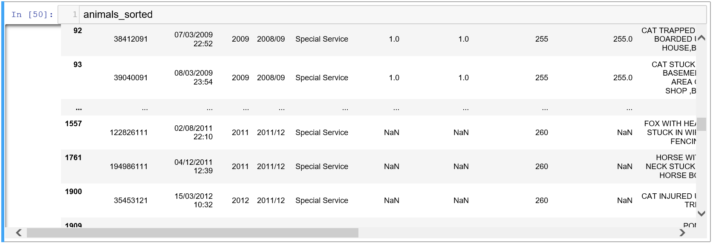
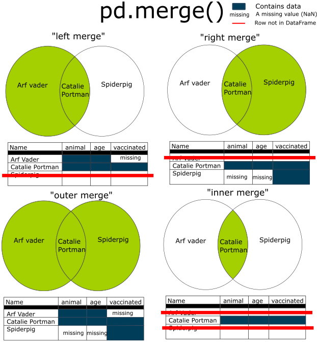

Chapter 4 - Working with DataFrames

This is a HTML document. The Introduction to Python course is written and intended to be used in a Jupyter Notebook file. These HTML documents have been made available for users who require screen readers or other accessibility needs. These HTML documents have been tested, but if you notice any errors or any compatibility issues please contact us on the GSS Capability email inbox.
If you are using a screen reader you will need to set your punctuation level (sometimes called verbosity) to full, especially for the code sections.
Chapter Overview and Learning Objectives:
-
- Quick Previews
- Size
- Data Types
- Column Names
-
- Selecting Single Columns
- Selecting Multiple Columns
-
- Single Conditional Filtering
- Multiple Conditional Filtering
-
- Constant Values
- Numeric Values
- Boolean and Binary Values
- Mapping new values
- Deleting columns
-
- About Merging
- Merging using Pandas
- Union joins
1 Packages and Datasets
1.1 Packages
As a reminder, we should always import our packages at the top of our script. In this chapter (and for the rest of the course) we will use pandas, and give it the alias pd.
1.1.1 Exercise
Import Pandas and give it the alias pd
import pandas as pd1.2 Datasets
Good practice also dictates that we import our datasets at the top of our script too, following the import of packages.
In this session we’ll be using the following datasets.
| variable name | file name | |
|---|---|---|
| animals | animals.csv | |
| titanic | titanic.xlsx | |
| joining_data1 | joining_data1.csv | |
| joining_data2 | joining_data2.csv | |
| union_join_data | union_data.csv | |
| marvel_left | joining_exercise1.csv | |
| marvel_right | joining_exercise2.csv |
These are all straight forward data imports with no additional parameters required. This is a good test of the techniques covered in Chapter 3.
1.2.1 Exercise
Load in these datasets listed above
You can check your variables are loaded by using %whos in Jupyter. In Spyder or other IDE’s they should appear in your variable explorer.
animals = pd.read_csv("../data/animals.csv")
titanic = pd.read_excel("../data/titanic.xlsx")
joining_data1 = pd.read_csv("../data/joining_data1.csv")
joining_data2 = pd.read_csv("../data/joining_data2.csv")
union_join_data = pd.read_csv("../data/union_data.csv")
marvel_left = pd.read_csv("../data/joining_exercise1.csv")
marvel_right = pd.read_csv("../data/joining_exercise2.csv")2 Exploring Datasets
Before you start working with a dataset it is important to examine it. For example:
- Do the values look how you would expect?
- Does the data have the right number of rows and columns?
- Do the columns have your expected data types?
- Is your data clean?
In this section we’ll look at various ways of exploring our data, with the aim of answering the above questions.
In chapter 5 we will look at how we can clean our data. When working with data, cleaning is normally a step we’d do first. Those concepts are a little more complicated; and we like to establish a good base knowledge of how Python works first. For these sessions we’ll be using data that has already been cleaned to make it easy to handle.
2.1 Quick Previews
In the last section we looked at three methods of quickly inspecting our dataframes.
- .head() - Top 5 rows (can be altered with parameter n =)
- .tail() - Bottom 5 Rows (can be altered with paramter n =)
- .sample() - 1 Randomly sampled row.
We use these because we do not always want Jupyter Notebooks to print out large datasets; we just want to check that certain operations have worked on a smaller amount of data.
To review, we can modify how many rows are returned by putting a number within the round brackets. The number in the round brackets is known as an argument. .head() and .tail() have a default argument of 5; if we don’t pass an argument that default behaviour is used.
You may recall that we mentioned this parameter is ‘n =’, but we need not specify the name, just the argument. Why is this? This is because Python knows what parameter we are giving an argument for when specifying the integer to .head() or .tail().
However, don’t always rely on this, as order comes into play when functions/methods have a large number of parameters (and particularly multiple ones of the same type, integers etc). As such, it is good practice to use the name of the parameter in most cases.
2.1.1 Example
animals.head(3)
# Best Practice
# animals.head(n = 3)| IncidentNumber | DateTimeOfCall | CalYear | FinYear | TypeOfIncident | PumpCount | PumpHoursTotal | HourlyNominalCost(£) | IncidentNominalCost(£) | FinalDescription | AnimalGroupParent | PropertyType | SpecialServiceTypeCategory | SpecialServiceType | Borough | StnGroundName | AnimalClass | Code | London |
|---|---|---|---|---|---|---|---|---|---|---|---|---|---|---|---|---|---|---|
| 139091 | 01/01/2009 03:01 | 2009 | 2008/09 | Special Service | 1 | 2 | 255 | 510 | DOG WITH JAW TRAPPED IN MAGAZINE RACK,B15 | Dog | House - single occupancy | Other animal assistance | Animal assistance involving livestock - Other action | Croydon | Norbury | Mammal | 00AH | Outer London |
| 275091 | 01/01/2009 08:51 | 2009 | 2008/09 | Special Service | 1 | 1 | 255 | 255 | ASSIST RSPCA WITH FOX TRAPPED,B15 | Fox | Railings | Other animal assistance | Animal assistance involving livestock - Other action | Croydon | Woodside | Mammal | 00AH | Outer London |
| 2075091 | 04/01/2009 10:07 | 2009 | 2008/09 | Special Service | 1 | 1 | 255 | 255 | DOG CAUGHT IN DRAIN,B15 | Dog | Pipe or drain | Animal rescue from below ground | Animal rescue from below ground - Domestic pet | Sutton | Wallington | Mammal | 00BF | Outer London |
If you run just animals, you may notice that Jupyter does not display all of the rows in our DataFrame.

Instead it represents these rows using three dots, … (ellipsis) symbol. You may also see this with columns. This often happens in large datasets; and helps to save computational power. This is similar to the max print option in Spyder and other IDEs.
While there are various ways of changing this setting with Jupyter (Stack Overflow has several answers), if you are regularly using large DataFrames, and wish to inspect all rows you may wish to use VSCode or another IDE, since many of these have in built data viewers (which allow us to view the whole dataset).
We can also use .info() this gives us information about:
- The class of the object – a pandas DataFrame
- The range (or length of our index), a.k.a the number of rows
- How many columns we have
- The column names
- The number of non-null entries (a.k.a without missing values)
- The data type of the column
- The number of columns of each data type.
2.1.2 Example
animals.info()<class 'pandas.core.frame.DataFrame'>
RangeIndex: 5752 entries, 0 to 5751
Data columns (total 19 columns):
# Column Non-Null Count Dtype
--- ------ -------------- -----
0 IncidentNumber 5752 non-null object
1 DateTimeOfCall 5752 non-null object
2 CalYear 5752 non-null int64
3 FinYear 5752 non-null object
4 TypeOfIncident 5752 non-null object
5 PumpCount 5716 non-null float64
6 PumpHoursTotal 5716 non-null float64
7 HourlyNominalCost(£) 5752 non-null int64
8 IncidentNominalCost(£) 5716 non-null float64
9 FinalDescription 5749 non-null object
10 AnimalGroupParent 5752 non-null object
11 PropertyType 5752 non-null object
12 SpecialServiceTypeCategory 5752 non-null object
13 SpecialServiceType 5752 non-null object
14 Borough 5748 non-null object
15 StnGroundName 5752 non-null object
16 AnimalClass 5752 non-null object
17 Code 5742 non-null object
18 London 5742 non-null object
dtypes: float64(3), int64(2), object(14)
memory usage: 853.9+ KB2.2 Size
Knowing the size of our DataFrame is also useful (a.k.a the number of rows and columns), separately to what .info() gives us. Often we want to save these elements to variables and this is difficult with that method and as such, we use other methods to draw out this information for further analysis.
2.2.1 Example
.shape provides us a tuple with the dimensions of the object, in the form (number of rows, number of columns).
animals.shape(5752, 19)Notice this is the first example of an attribute of the DataFrame rather than a method, so doesn’t require the round brackets at the end of its call. We talk a bit more about the similarities and differences between functions, methods and attributes in chapter 2. Feel free to review that section if you are stuck.
We can use our indexing brackets (also discussed at length in chapter 2) to return an item in this tuple, for example the number rows at index 0.
animals.shape[0]5752And the number of columns at index 1.
animals.shape[1]19As an aside:
Because .shape returns us a tuple we can assign each of these to it’s own variable. To do this we give our variable names in the order of the tuple output, separated by a comma before our assignment operator (=).
2.2.2 Example
Our tuple outputs rows first then columns, so we give our variables as nrow and ncol. This is also a great chance to show off multi-variable assignment introduced in chapter 2.
nrow, ncol = animals.shape
print("There are", nrow, "rows, and", ncol, "columns in the animals DataFrame.")There are 5752 rows, and 19 columns in the animals DataFrame.Of course, you can always do this separately without multi-variable assignment as below, but that way is certainly the most efficient.
nrow = animals.shape[0]
ncol = animals.shape[1]We can also use the inbuilt len() function to find the length. This will return us the number of rows.
len(animals)5752We can also modify this to return us the number of columns as follows.
len(animals.columns)19Note that the .columns attribute is also very useful, returning something called an Index object containing the ordered column names of the pandas object. Returning the length of such an object gives us the number of values (a.k.a the number of columns).
More info on this datatype is available here, but I would suggest returning to this later as reference material.
2.2.3 Exercise
Look at the dimensions of the titanic DataFrame.
- Use shape to return the tuple of rows and columns.
- Use multi-variable assignment to obtain the rows and columns as variables.
- Print the results from (b) in a suitable sentence.
# (a)
titanic.shape(1309, 14)# (b)
nrow, ncol = titanic.shape
print(nrow, ncol)1309 14# (c)
print("There are", nrow, "rows and", ncol, "columns in the titanic DataFrame.")There are 1309 rows and 14 columns in the titanic DataFrame.3 Data Types
It is also important to check the data types when we bring in data. If you’ve worked with other analytical software before you’ll know that sometimes data doesn’t come in as we would expect.
3.1 Observing the datatypes in our data
We do this using .dtypes, another very useful attribute (delivering on that promise that we will use attributes as well as methods!).
3.1.1 Example
animals.dtypesIncidentNumber object
DateTimeOfCall object
CalYear int64
FinYear object
TypeOfIncident object
PumpCount float64
PumpHoursTotal float64
HourlyNominalCost(£) int64
IncidentNominalCost(£) float64
FinalDescription object
AnimalGroupParent object
PropertyType object
SpecialServiceTypeCategory object
SpecialServiceType object
Borough object
StnGroundName object
AnimalClass object
Code object
London object
dtype: objectWe have some of the data types we’re seen before
- int represents integers; our whole numbers
- CalYear (Calendar Year) is column of whole numbers
- float represents ‘floating point’ numbers or decimals
- IncidentNominalCost(£) (The financial cost of each incident) is a decimal number.
- object or O here represents what we’ve been calling string data so far, in that they are text values
- AnimalClass (The kind of animal) is a text based value.
We may also see
- bool - representing Boolean values; our True and False
- datetime - date and time values
- category - a special pandas datatype for categorical or factor variables (see Chapter 7 for more info, this is reference material)
You may notice that some categories have not come in quite how we would expect.
3.1.2 Example
animals['DateTimeOfCall'].dtypes
# This is how we select a single column; we'll cover this laterdtype('O')DateTimeOfCall has come in as an object or text value; when it should be datetime. This is extremely common with dates and times in a variety of software; not just Python!

Python will often choose an object data type for columns: if there’s any ambiguity over the data type. This is because this data type retains all the characteristics of the data and allows us to make the choice about how to process it.
For example, the date 01/11/19 could be interpreted as either:
- 1st November 2019
- 11th January 2019
- 19th November 2001
depending on region (which makes the most sense to you?).
Since we don’t look at handling date and time data in this course; we’ll leave these columns alone for now. This is a perfect time to reference the Dates and Times in Python course on the Learning Hub! This is a recommended follow up to the Introduction to Python course.
For an overview that is much less in-depth than that course, the following resource is available:
This Geeks for Geeks tutorial link is a tutorial for handling dates and times using pandas.
3.1.3 Exercise
Look at the data types of the titanic DataFrame.
Are there any values you didn’t expect to see?
You can check the Data Dictionary (an explanation of each column) here
# Look at the data types of the titanic DataFrame.
titanic.dtypespclass int64
survived int64
name object
sex object
age float64
sibsp int64
parch int64
ticket object
fare float64
cabin object
embarked object
home.dest object
body float64
boat object
dtype: objectWe may expect “survived” to be a boolean (since it is a binary choice, yes or no) but it’s a numeric. To come over as boolean it would’ve needed to be ‘TRUE’, ‘FALSE’ or ‘True’, ‘False’.
We may expect “boat” to be a number, but some boats are referred to by letters.
3.2 Column Names
It is important to know what your columns are called because in Python we commonly select our columns by name. It is also key to know how they are constructed (lower case, snake case etc) as Python is case sensitive.
3.2.1 Example
First we give the DataFrame name then the name of our column, in quotes, inside square brackets.
animals['AnimalClass']0 Mammal
1 Mammal
2 Mammal
3 Mammal
4 Mammal
...
5747 Mammal
5748 Mammal
5749 Mammal
5750 Mammal
5751 Mammal
Name: AnimalClass, Length: 5752, dtype: objectWe can then add a method to the end, for example .head().
animals['AnimalClass'].head()0 Mammal
1 Mammal
2 Mammal
3 Mammal
4 Mammal
Name: AnimalClass, dtype: objectWhile Python can handle column names with spaces, symbols and irregular capitalization; it is often easier to clean them. We’ll have a look at how to do this in Chapter 5.
3.2.2 Example
As a reminder, We can access our columns by using the .columns attribute to return an Index datatype filled with the column names.
animals.columnsIndex(['IncidentNumber', 'DateTimeOfCall', 'CalYear', 'FinYear',
'TypeOfIncident', 'PumpCount', 'PumpHoursTotal', 'HourlyNominalCost(£)',
'IncidentNominalCost(£)', 'FinalDescription', 'AnimalGroupParent',
'PropertyType', 'SpecialServiceTypeCategory', 'SpecialServiceType',
'Borough', 'StnGroundName', 'AnimalClass', 'Code', 'London'],
dtype='object')It would be nice to display them as a list to make the object easier to work with, so we can add (or chain) the method .tolist() on the end.
animals.columns.tolist()['IncidentNumber', 'DateTimeOfCall', 'CalYear', 'FinYear', 'TypeOfIncident', 'PumpCount', 'PumpHoursTotal', 'HourlyNominalCost(£)', 'IncidentNominalCost(£)', 'FinalDescription', 'AnimalGroupParent', 'PropertyType', 'SpecialServiceTypeCategory', 'SpecialServiceType', 'Borough', 'StnGroundName', 'AnimalClass', 'Code', 'London']3.2.3 Exercise
Look at the column names of the titanic DataFrame and convert them to a list, giving it an appropriate variable name.
Use indexing to return the column name ‘embarked’.
Use negative indexing to return the list without ‘boat’.
# (a)
titanic_cols = titanic.columns.tolist()
titanic_cols['pclass', 'survived', 'name', 'sex', 'age', 'sibsp', 'parch', 'ticket', 'fare', 'cabin', 'embarked', 'home.dest', 'body', 'boat']# (b)
titanic_cols[10]'embarked'# (c)
titanic_cols[:-1]['pclass', 'survived', 'name', 'sex', 'age', 'sibsp', 'parch', 'ticket', 'fare', 'cabin', 'embarked', 'home.dest', 'body']We can also use Jupyter’s auto complete feature to help us when accessing the names of our columns. Copy the cell below place your cursor after the H and hit tab.
animals['H']You’ll see that the auto complete option gives us the name of our HourlyNominalCost(£) column. This can be a really useful shortcut when we’re writing our code, circumventing the need to type out full column names.
4 Sorting Data
Our data is displayed in the same order as the source data, which means that we may want to sort our data, based on specific columns.
4.1 The method of sorting in Pandas
4.1.1 Example
To do this we use the method .sort_values(by=“column name”). When transforming data like this, we want to assign the new object as we don’t want to re-type this process each time.
animals_sorted = animals.sort_values(by="IncidentNominalCost(£)")
animals_sorted.head()| IncidentNumber | DateTimeOfCall | CalYear | FinYear | TypeOfIncident | PumpCount | PumpHoursTotal | HourlyNominalCost(£) | IncidentNominalCost(£) | FinalDescription | AnimalGroupParent | PropertyType | SpecialServiceTypeCategory | SpecialServiceType | Borough | StnGroundName | AnimalClass | Code | London | |
|---|---|---|---|---|---|---|---|---|---|---|---|---|---|---|---|---|---|---|---|
| 122 | 52735091 | 31/03/2009 07:40 | 2009 | 2008/09 | Special Service | 1 | 1 | 255 | 255 | CAT TRAPPED BETWEEN WALLS,B15 | Cat | Takeaway, fast food | Other animal assistance | Animal assistance involving livestock - Other action | Bromley | Biggin Hill | Mammal | 00AF | Outer London |
| 88 | 36729091 | 04/03/2009 23:35 | 2009 | 2008/09 | Special Service | 1 | 1 | 255 | 255 | DOG TRAPPED IN STREAM, B15 | Dog | Canal/riverbank vegetation | Animal rescue from water | Animal rescue from water - Domestic pet | Lewisham | Lee Green | Mammal | 00AZ | Inner London |
| 86 | 36590091 | 04/03/2009 18:36 | 2009 | 2008/09 | Special Service | 1 | 1 | 255 | 255 | DOG TRAPPED IN WATER,J15 | Dog | River/canal | Animal rescue from water | Wild animal rescue from water or mud | Merton | Wimbledon | Mammal | 00BA | Inner London |
| 85 | 35781091 | 03/03/2009 12:54 | 2009 | 2008/09 | Special Service | 1 | 1 | 255 | 255 | PIGEON TRAPPED IN SHELTER, B15 | Bird | Railway building - other | Animal rescue from height | Animal rescue from height - Bird | Newham | Plaistow | Bird | 00BB | Outer London |
| 84 | 35738091 | 03/03/2009 11:05 | 2009 | 2008/09 | Special Service | 1 | 1 | 255 | 255 | CAT TRAPPED BETWEEN CHIMNEY POTS, B15 | Cat | House - single occupancy | Animal rescue from height | Animal rescue from height - Domestic pet | Newham | East Ham | Mammal | 00BB | Inner London |
There are additional arguments we can set, for example, by default the values are sorted in ascending order, by changing ascending= to ascending=False we can sort in descending order instead.
animals_sorted = animals.sort_values(by="IncidentNominalCost(£)", ascending=False)
animals_sorted.head()| IncidentNumber | DateTimeOfCall | CalYear | FinYear | TypeOfIncident | PumpCount | PumpHoursTotal | HourlyNominalCost(£) | IncidentNominalCost(£) | FinalDescription | AnimalGroupParent | PropertyType | SpecialServiceTypeCategory | SpecialServiceType | Borough | StnGroundName | AnimalClass | Code | London | |
|---|---|---|---|---|---|---|---|---|---|---|---|---|---|---|---|---|---|---|---|
| 4450 | 098141-28072016 | 28/07/2016 13:49 | 2016 | 2016/17 | Special Service | 3 | 12 | 326 | 3912 | CAT STUCK WITHIN WALL SPACE RSPCA IN ATTENDANCE | Cat | Purpose Built Flats/Maisonettes - 4 to 9 storeys | Other animal assistance | Animal assistance involving domestic animal - Other action | Camden | Kentish Town | Mammal | 00AG | Inner London |
| 2542 | 48360131 | 19/04/2013 07:01 | 2013 | 2013/14 | Special Service | 2 | 12 | 290 | 3480 | FOAL IN RIVER WATER LEVEL ONE IMPLEMENTED | Horse | River/canal | Other animal assistance | Animal assistance - Lift heavy livestock animal | Waltham Forest | Chingford | Mammal | 00BH | Outer London |
| 3757 | 62700151 | 22/05/2015 11:34 | 2015 | 2015/16 | Special Service | 2 | 10 | 298 | 2980 | HORSE FALLEN INTO SWIMMING POOL | Horse | Other outdoor structures | Animal rescue from water | Animal rescue from water - Farm animal | Bromley | Biggin Hill | Mammal | 00AF | Outer London |
| 5568 | 092389-09072018 | 09/07/2018 08:35 | 2018 | 2018/19 | Special Service | 2 | 8 | 333 | 2664 | HORSE TRAPPED IN DOORWAY ADDITIONAL FRU REQUESTED FROM SCENE - SILENT APPROACH | Horse | Animal harm outdoors | Other animal assistance | Animal assistance - Lift heavy domestic animal | Hillingdon | Hillingdon | Mammal | 00AS | Outer London |
| 3143 | 49076141 | 22/04/2014 09:54 | 2014 | 2014/15 | Special Service | 2 | 9 | 295 | 2655 | KITTEN TRAPPED IN CHIMNEY | Cat | Purpose Built Flats/Maisonettes - Up to 3 storeys | Other animal assistance | Assist trapped domestic animal | Hounslow | Feltham | Mammal | 00AT | Outer London |
We can also sort by more than one column, but we can’t just type out the column names in succession to the .sort_values() method. We must include them in a list instead, where order is important.
4.1.2 Example
Here we are sorting by “IncidentNominalCost(£)”; and then by “AnimalClass”. Notice object (text/string) columns are sorted by alphabetical order. The reason order is important is because it creates a dependence, namely that sorting by the second column is entirely dependent on the sorting of the first column.
animals_sorted = animals.sort_values(by=["IncidentNominalCost(£)", "AnimalClass"])
animals_sorted.head()| IncidentNumber | DateTimeOfCall | CalYear | FinYear | TypeOfIncident | PumpCount | PumpHoursTotal | HourlyNominalCost(£) | IncidentNominalCost(£) | FinalDescription | AnimalGroupParent | PropertyType | SpecialServiceTypeCategory | SpecialServiceType | Borough | StnGroundName | AnimalClass | Code | London | |
|---|---|---|---|---|---|---|---|---|---|---|---|---|---|---|---|---|---|---|---|
| 27 | 7051091 | 11/01/2009 12:32 | 2009 | 2008/09 | Special Service | 1 | 1 | 255 | 255 | SWAN STUCK ON ROOF,B15 | Bird | Domestic garden (vegetation not equipment) | Animal rescue from height | Animal rescue from height - Bird | Havering | Hornchurch | Bird | 00AR | Outer London |
| 31 | 9252091 | 15/01/2009 12:38 | 2009 | 2008/09 | Special Service | 1 | 1 | 255 | 255 | ASSIST RSPCA WITH BIRD TRAPPED IN TREE BY FOOT,B15 | Bird | Wasteland | Animal rescue from height | Animal rescue from height - Bird | Lambeth | Clapham | Bird | 00AY | Inner London |
| 40 | 13245091 | 22/01/2009 21:35 | 2009 | 2008/09 | Special Service | 1 | 1 | 255 | 255 | BIRD IN CHIMNEY,B15 | Bird | House - single occupancy | Other animal assistance | Animal assistance involving livestock - Other action | Harrow | Stanmore | Bird | 00AQ | Outer London |
| 63 | 21760091 | 07/02/2009 11:12 | 2009 | 2008/09 | Special Service | 1 | 1 | 255 | 255 | PIGEON IN PRECARIOUS POSITION, B15 | Bird | Tree scrub | Animal rescue from below ground | Animal rescue from below ground - Bird | Westminster | Soho | Bird | 00BK | Outer London |
| 68 | 26715091 | 15/02/2009 15:53 | 2009 | 2008/09 | Special Service | 1 | 1 | 255 | 255 | SWAN IN DISTRESS, J15 | Bird | River/canal | Animal rescue from water | Animal rescue from water - Bird | Tower Hamlets | Shadwell | Bird | 00BG | Outer London |
When sorting more than one column, it’s best to specify ascending= as a list as well, to improve the readability and accessibility of our code. This list is in the same order as our columns and as such .sort_values() will apply column wise (first column, ascending, second column, descending etc).
Some versions of Pandas will sort both columns as descending if we just supply ascending = False ; however some won’t, so it’s better to be clear about what we want to do. By using a list I also have finer control in that I could have one in ascending order, and one in descending order if I wished.
4.1.3 Example
animals_sorted_desc = animals.sort_values(by=["IncidentNominalCost(£)", "AnimalClass"],
ascending=[False, False])
animals_sorted_desc.head()| IncidentNumber | DateTimeOfCall | CalYear | FinYear | TypeOfIncident | PumpCount | PumpHoursTotal | HourlyNominalCost(£) | IncidentNominalCost(£) | FinalDescription | AnimalGroupParent | PropertyType | SpecialServiceTypeCategory | SpecialServiceType | Borough | StnGroundName | AnimalClass | Code | London | |
|---|---|---|---|---|---|---|---|---|---|---|---|---|---|---|---|---|---|---|---|
| 4450 | 098141-28072016 | 28/07/2016 13:49 | 2016 | 2016/17 | Special Service | 3 | 12 | 326 | 3912 | CAT STUCK WITHIN WALL SPACE RSPCA IN ATTENDANCE | Cat | Purpose Built Flats/Maisonettes - 4 to 9 storeys | Other animal assistance | Animal assistance involving domestic animal - Other action | Camden | Kentish Town | Mammal | 00AG | Inner London |
| 2542 | 48360131 | 19/04/2013 07:01 | 2013 | 2013/14 | Special Service | 2 | 12 | 290 | 3480 | FOAL IN RIVER WATER LEVEL ONE IMPLEMENTED | Horse | River/canal | Other animal assistance | Animal assistance - Lift heavy livestock animal | Waltham Forest | Chingford | Mammal | 00BH | Outer London |
| 3757 | 62700151 | 22/05/2015 11:34 | 2015 | 2015/16 | Special Service | 2 | 10 | 298 | 2980 | HORSE FALLEN INTO SWIMMING POOL | Horse | Other outdoor structures | Animal rescue from water | Animal rescue from water - Farm animal | Bromley | Biggin Hill | Mammal | 00AF | Outer London |
| 5568 | 092389-09072018 | 09/07/2018 08:35 | 2018 | 2018/19 | Special Service | 2 | 8 | 333 | 2664 | HORSE TRAPPED IN DOORWAY ADDITIONAL FRU REQUESTED FROM SCENE - SILENT APPROACH | Horse | Animal harm outdoors | Other animal assistance | Animal assistance - Lift heavy domestic animal | Hillingdon | Hillingdon | Mammal | 00AS | Outer London |
| 3143 | 49076141 | 22/04/2014 09:54 | 2014 | 2014/15 | Special Service | 2 | 9 | 295 | 2655 | KITTEN TRAPPED IN CHIMNEY | Cat | Purpose Built Flats/Maisonettes - Up to 3 storeys | Other animal assistance | Assist trapped domestic animal | Hounslow | Feltham | Mammal | 00AT | Outer London |
4.1.4 Exercise
Sort the titanic DataFrame by the age column in descending order, name it titanic_sorted.
Sort the titanic DataFrame by the age then sex columns, both in ascending order.
Using (b), pick out the sex and of the youngest person on board the titanic.
Sort the titanic DataFrame by ascending fare then descending age, naming it appropriately.
Use your answer to part (d) to identify the oldest person who paid the least fare.
# (a)
titanic_sorted = titanic.sort_values(by="age", ascending=False)
titanic_sorted.head()| pclass | survived | name | sex | age | sibsp | parch | ticket | fare | cabin | embarked | home.dest | body | boat | |
|---|---|---|---|---|---|---|---|---|---|---|---|---|---|---|
| 14 | 1 | 1 | Barkworth, Mr. Algernon Henry Wilson | male | 80 | 0 | 0 | 27042 | 30.0000 | A23 | S | Hessle, Yorks | NaN | B |
| 61 | 1 | 1 | Cavendish, Mrs. Tyrell William (Julia Florence Siegel) | female | 76 | 1 | 0 | 19877 | 78.8500 | C46 | S | Little Onn Hall, Staffs | NaN | 6 |
| 1235 | 3 | 0 | Svensson, Mr. Johan | male | 74 | 0 | 0 | 347060 | 7.7750 | NaN | S | NaN | NaN | NaN |
| 135 | 1 | 0 | Goldschmidt, Mr. George B | male | 71 | 0 | 0 | PC 17754 | 34.6542 | A5 | C | New York, NY | NaN | NaN |
| 9 | 1 | 0 | Artagaveytia, Mr. Ramon | male | 71 | 0 | 0 | PC 17609 | 49.5042 | NaN | C | Montevideo, Uruguay | 22 | NaN |
# (b)
titanic_age_sex = titanic.sort_values(by = ['age', 'sex'], ascending = [True, True])
# This also works but is not good practice
# titanic_age_sex = titanic.sort_values(by = ['age', 'sex'])| pclass | survived | name | sex | age | sibsp | parch | ticket | fare | cabin | embarked | home.dest | body | boat | |
|---|---|---|---|---|---|---|---|---|---|---|---|---|---|---|
| 14 | 1 | 1 | Barkworth, Mr. Algernon Henry Wilson | male | 80 | 0 | 0 | 27042 | 30.0000 | A23 | S | Hessle, Yorks | NaN | B |
| 61 | 1 | 1 | Cavendish, Mrs. Tyrell William (Julia Florence Siegel) | female | 76 | 1 | 0 | 19877 | 78.8500 | C46 | S | Little Onn Hall, Staffs | NaN | 6 |
| 1235 | 3 | 0 | Svensson, Mr. Johan | male | 74 | 0 | 0 | 347060 | 7.7750 | NaN | S | NaN | NaN | NaN |
| 135 | 1 | 0 | Goldschmidt, Mr. George B | male | 71 | 0 | 0 | PC 17754 | 34.6542 | A5 | C | New York, NY | NaN | NaN |
| 9 | 1 | 0 | Artagaveytia, Mr. Ramon | male | 71 | 0 | 0 | PC 17609 | 49.5042 | NaN | C | Montevideo, Uruguay | 22 | NaN |
- The youngest person aboard the titanic was in fact a female at 0.17 years, which is just over 2 months (thanks Google!).
# (d)
titanic_fare_age = titanic.sort_values(by = ['fare', 'age'], ascending = [True, False])| pclass | survived | name | sex | age | sibsp | parch | ticket | fare | cabin | embarked | home.dest | body | boat | |
|---|---|---|---|---|---|---|---|---|---|---|---|---|---|---|
| 14 | 1 | 1 | Barkworth, Mr. Algernon Henry Wilson | male | 80 | 0 | 0 | 27042 | 30.0000 | A23 | S | Hessle, Yorks | NaN | B |
| 61 | 1 | 1 | Cavendish, Mrs. Tyrell William (Julia Florence Siegel) | female | 76 | 1 | 0 | 19877 | 78.8500 | C46 | S | Little Onn Hall, Staffs | NaN | 6 |
| 1235 | 3 | 0 | Svensson, Mr. Johan | male | 74 | 0 | 0 | 347060 | 7.7750 | NaN | S | NaN | NaN | NaN |
| 135 | 1 | 0 | Goldschmidt, Mr. George B | male | 71 | 0 | 0 | PC 17754 | 34.6542 | A5 | C | New York, NY | NaN | NaN |
| 9 | 1 | 0 | Artagaveytia, Mr. Ramon | male | 71 | 0 | 0 | PC 17609 | 49.5042 | NaN | C | Montevideo, Uruguay | 22 | NaN |
- We see that there were actually two people aged 49 who paid no fare to board the titanic, and they were the oldest to do so.
5 Revisiting parameters and arguments
I mentioned earlier that not including parameter names can sometimes confuse Python when it comes to the order in which they can be specified for larger functions. Now we will see this in practice.
Important Example
Parameters are key words that tell python what the following argument relates to. We have two in the code below:
by= is a parameter and the string representing the column “IncidentNominalCost(£)” is the argument.
ascending= is a parameter and the Boolean value False is the argument
If we don’t specify parameters Python will assume our arguments are in the order specified in the Signature (press shift + tab with your cursor in .sort_values() to see this), and because of this the code below won’t work.
# This code will give us an error!
# After you've tried it, you may want to comment it out!
animals_sorted = animals.sort_values("IncidentNominalCost(£)", False)
animals_sorted.head()Our first argument IncidentNominalCost(£) maps directly to the by= parameter as expected. However, Python assumes the second argument False relates to the axis = parameter; which in some versions isn’t a valid argument, and in some pandas versions is treated effectively as axis =0.
It is personal preference if you use parameters before your arguments. It is considered good practice, and can make your code more readable, especially to new coders. We would strongly advise doing so.
As a bonus when you use parameters with your arguments you can pass them in any order as Python no longer relies on it being a positional based argument.
animals_sorted = animals.sort_values(ascending=False, by="IncidentNominalCost(£)")
animals_sorted.head()| IncidentNumber | DateTimeOfCall | CalYear | FinYear | TypeOfIncident | PumpCount | PumpHoursTotal | HourlyNominalCost(£) | IncidentNominalCost(£) | FinalDescription | AnimalGroupParent | PropertyType | SpecialServiceTypeCategory | SpecialServiceType | Borough | StnGroundName | AnimalClass | Code | London | |
|---|---|---|---|---|---|---|---|---|---|---|---|---|---|---|---|---|---|---|---|
| 4450 | 098141-28072016 | 28/07/2016 13:49 | 2016 | 2016/17 | Special Service | 3 | 12 | 326 | 3912 | CAT STUCK WITHIN WALL SPACE RSPCA IN ATTENDANCE | Cat | Purpose Built Flats/Maisonettes - 4 to 9 storeys | Other animal assistance | Animal assistance involving domestic animal - Other action | Camden | Kentish Town | Mammal | 00AG | Inner London |
| 2542 | 48360131 | 19/04/2013 07:01 | 2013 | 2013/14 | Special Service | 2 | 12 | 290 | 3480 | FOAL IN RIVER WATER LEVEL ONE IMPLEMENTED | Horse | River/canal | Other animal assistance | Animal assistance - Lift heavy livestock animal | Waltham Forest | Chingford | Mammal | 00BH | Outer London |
| 3757 | 62700151 | 22/05/2015 11:34 | 2015 | 2015/16 | Special Service | 2 | 10 | 298 | 2980 | HORSE FALLEN INTO SWIMMING POOL | Horse | Other outdoor structures | Animal rescue from water | Animal rescue from water - Farm animal | Bromley | Biggin Hill | Mammal | 00AF | Outer London |
| 5568 | 092389-09072018 | 09/07/2018 08:35 | 2018 | 2018/19 | Special Service | 2 | 8 | 333 | 2664 | HORSE TRAPPED IN DOORWAY ADDITIONAL FRU REQUESTED FROM SCENE - SILENT APPROACH | Horse | Animal harm outdoors | Other animal assistance | Animal assistance - Lift heavy domestic animal | Hillingdon | Hillingdon | Mammal | 00AS | Outer London |
| 3143 | 49076141 | 22/04/2014 09:54 | 2014 | 2014/15 | Special Service | 2 | 9 | 295 | 2655 | KITTEN TRAPPED IN CHIMNEY | Cat | Purpose Built Flats/Maisonettes - Up to 3 storeys | Other animal assistance | Assist trapped domestic animal | Hounslow | Feltham | Mammal | 00AT | Outer London |
6 Subsetting
6.1 Selecting Single Columns
Sometimes we will want to work with smaller “cut down” DataFrames that contain fewer columns. As we saw earlier the simplest way to select a column from a DataFrame is to use the name of the column in the indexing brackets [].
6.1.1 Example
Here I am creating a new Series called ‘animal_grp_parent’ using the ‘AnimalGroupParent’ column from the animals DataFrame.
animal_grp_parent = animals['AnimalGroupParent']
animal_grp_parent.head()0 Dog
1 Fox
2 Dog
3 Horse
4 Rabbit
Name: AnimalGroupParent, dtype: object6.1.2 Exercise
Select the fare column from the titanic DataFrame and name it titanic_fare.
Randomly Sample 12 rows from the titanic_fare object you created.
# (a)
titanic_fare = titanic["fare"]
titanic_fare.head()0 211.3375
1 151.5500
2 151.5500
3 151.5500
4 151.5500
Name: fare, dtype: float64# (b)
titanic_fare.sample(n = 12)36 55.0000
309 164.8667
1225 NaN
744 10.1708
239 50.4958
610 9.4750
931 7.7375
1006 7.8792
942 7.2250
1001 23.2500
581 0.0000
584 13.0000
Name: fare, dtype: float646.2 Selecting Multiple Columns
6.2.1 Example
Similarly as with sorting by multiple columns, we can select multiple columns by providing them in a list.
# Create a list of columns
my_list_of_columns = [ "DateTimeOfCall", "AnimalGroupParent", "IncidentNominalCost(£)"]
# Pass that list to my indexing brackets, creating a dataframe
animal_small_df = animals[my_list_of_columns]We can, however do this in one step by using two sets of square brackets next to each other. It’s important to realise that they are doing two separate roles:
- Our first set is selecting or indexing from the animals DataFrame.
- Our second set is creating a list of our columns we wish to select.
# This gives the same result as the cell above.
animal_small_df = animals[[ "DateTimeOfCall", "AnimalGroupParent", "IncidentNominalCost(£)"]]
animal_small_df.sample(6)| DateTimeOfCall | AnimalGroupParent | IncidentNominalCost(£) | |
|---|---|---|---|
| 5353 | 02/04/2018 16:38 | Bird | 333 |
| 836 | 11/06/2010 23:44 | Cat | 260 |
| 1323 | 22/04/2011 13:23 | Cat | 260 |
| 2647 | 11/06/2013 11:21 | Fox | 290 |
| 822 | 02/06/2010 20:57 | Dog | 260 |
| 1334 | 26/04/2011 07:40 | Cat | 260 |
Two important things to note are the following:
When we return one column we get a Series object (as DataFrames are collections of Series objects)
When we return more than one column we get a DataFrame.
6.2.2 Exercise
Select the name, sex, age and survived column from the titanic DataFrame, naming it accordingly.
Create two sub DataFrames from your answer to part (a), one containing sex and age and another containing name and survived, naming them accordingly.
# (a)
titanic_select = titanic[["name","sex","age", "survived"]]
titanic_select.head()| name | sex | age | survived |
|---|---|---|---|
| Allen, Miss. Elisabeth Walton | female | 29.0000 | 1 |
| Allison, Master. Hudson Trevor | male | 0.9167 | 1 |
| Allison, Miss. Helen Loraine | female | 2.0000 | 0 |
| Allison, Mr. Hudson Joshua Creighton | male | 30.0000 | 0 |
| Allison, Mrs. Hudson J C (Bessie Waldo Daniels) | female | 25.0000 | 0 |
# (b)
titanic_ages_sexes = titanic_select[["age", "sex"]]
titanic_names_survived = titanic_select[["name", "survived"]]Note that you may see people selecting columns using dataframe.column_name, which is a legal practice, but certainly not a recommended one!
# This will work - but is not good practice!
titanic.sex.head()0 female
1 male
2 female
3 male
4 female
Name: sex, dtype: objectWe don’t recommend this because it looks too much like an attribute or method. This also won’t work if you had a column that was something like mean as Python can’t determine if you mean the column mean or the method .mean().
There’s no ambiguity with
dataframe[“column”]which is why we will always recommend it over the dataframe.column_name.
6.3 Selecting on data type
We can also use the method .select_dtypes() if we want to include or exclude specific kinds of data from our dataframe.
# Select just the object columns
animal_object_cols = animals.select_dtypes(include=["object"])
# Return the top of the animal columns
animal_object_cols.head()| IncidentNumber | DateTimeOfCall | FinYear | TypeOfIncident | FinalDescription | AnimalGroupParent | PropertyType | SpecialServiceTypeCategory | SpecialServiceType | Borough | StnGroundName | AnimalClass | Code | London |
|---|---|---|---|---|---|---|---|---|---|---|---|---|---|
| 139091 | 01/01/2009 03:01 | 2008/09 | Special Service | DOG WITH JAW TRAPPED IN MAGAZINE RACK,B15 | Dog | House - single occupancy | Other animal assistance | Animal assistance involving livestock - Other action | Croydon | Norbury | Mammal | 00AH | Outer London |
| 275091 | 01/01/2009 08:51 | 2008/09 | Special Service | ASSIST RSPCA WITH FOX TRAPPED,B15 | Fox | Railings | Other animal assistance | Animal assistance involving livestock - Other action | Croydon | Woodside | Mammal | 00AH | Outer London |
| 2075091 | 04/01/2009 10:07 | 2008/09 | Special Service | DOG CAUGHT IN DRAIN,B15 | Dog | Pipe or drain | Animal rescue from below ground | Animal rescue from below ground - Domestic pet | Sutton | Wallington | Mammal | 00BF | Outer London |
| 2872091 | 05/01/2009 12:27 | 2008/09 | Special Service | HORSE TRAPPED IN LAKE,J17 | Horse | Intensive Farming Sheds (chickens, pigs etc) | Animal rescue from water | Animal rescue from water - Farm animal | Hillingdon | Ruislip | Mammal | 00AS | Outer London |
| 3553091 | 06/01/2009 15:23 | 2008/09 | Special Service | RABBIT TRAPPED UNDER SOFA,B15 | Rabbit | House - single occupancy | Other animal assistance | Animal assistance involving livestock - Other action | Havering | Harold Hill | Mammal | 00AR | Outer London |
We must specify our include data types as a list here, even if we’re just specifying one value. It’s just the way this function was written (it will tell you this in the help documentation).
- “object” includes our string columns, I could also use “O” here.
- “float64” and “int64” will select floating point numbers and integer numbers respectively.
- If you have the numpy package loaded (import numpy as np) you can use np.number (no quotes) to return numerical data.
You can even use the parameter exclude= which may be easier if you wish to omit just one data type.
6.3.1 Exercise
Create a new DataFrame titanic_int_no_float where we include all integer columns, but exclude all float columns.
titanic_int_no_float = titanic.select_dtypes(include = ['int64'], exclude = ['float64'])| pclass | survived | sibsp | parch |
|---|---|---|---|
| 1 | 1 | 0 | 0 |
| 1 | 1 | 1 | 2 |
| 1 | 0 | 1 | 2 |
| 1 | 0 | 1 | 2 |
| 1 | 0 | 1 | 2 |
7 Filtering
7.1 Filtering by Index Position
We can achieve really simple filtering by passing a range to the DataFrame indexer.
7.1.1 Example
animals[0:5]| IncidentNumber | DateTimeOfCall | CalYear | FinYear | TypeOfIncident | PumpCount | PumpHoursTotal | HourlyNominalCost(£) | IncidentNominalCost(£) | FinalDescription | AnimalGroupParent | PropertyType | SpecialServiceTypeCategory | SpecialServiceType | Borough | StnGroundName | AnimalClass | Code | London |
|---|---|---|---|---|---|---|---|---|---|---|---|---|---|---|---|---|---|---|
| 139091 | 01/01/2009 03:01 | 2009 | 2008/09 | Special Service | 1 | 2 | 255 | 510 | DOG WITH JAW TRAPPED IN MAGAZINE RACK,B15 | Dog | House - single occupancy | Other animal assistance | Animal assistance involving livestock - Other action | Croydon | Norbury | Mammal | 00AH | Outer London |
| 275091 | 01/01/2009 08:51 | 2009 | 2008/09 | Special Service | 1 | 1 | 255 | 255 | ASSIST RSPCA WITH FOX TRAPPED,B15 | Fox | Railings | Other animal assistance | Animal assistance involving livestock - Other action | Croydon | Woodside | Mammal | 00AH | Outer London |
| 2075091 | 04/01/2009 10:07 | 2009 | 2008/09 | Special Service | 1 | 1 | 255 | 255 | DOG CAUGHT IN DRAIN,B15 | Dog | Pipe or drain | Animal rescue from below ground | Animal rescue from below ground - Domestic pet | Sutton | Wallington | Mammal | 00BF | Outer London |
| 2872091 | 05/01/2009 12:27 | 2009 | 2008/09 | Special Service | 1 | 1 | 255 | 255 | HORSE TRAPPED IN LAKE,J17 | Horse | Intensive Farming Sheds (chickens, pigs etc) | Animal rescue from water | Animal rescue from water - Farm animal | Hillingdon | Ruislip | Mammal | 00AS | Outer London |
| 3553091 | 06/01/2009 15:23 | 2009 | 2008/09 | Special Service | 1 | 1 | 255 | 255 | RABBIT TRAPPED UNDER SOFA,B15 | Rabbit | House - single occupancy | Other animal assistance | Animal assistance involving livestock - Other action | Havering | Harold Hill | Mammal | 00AR | Outer London |
Which returns us the same rows as .head(). We can however modify this to return any range of rows within the DataFrame we like - for example the middle of our DataFrame.
animals[200:210]| IncidentNumber | DateTimeOfCall | CalYear | FinYear | TypeOfIncident | PumpCount | PumpHoursTotal | HourlyNominalCost(£) | IncidentNominalCost(£) | FinalDescription | AnimalGroupParent | PropertyType | SpecialServiceTypeCategory | SpecialServiceType | Borough | StnGroundName | AnimalClass | Code | London | |
|---|---|---|---|---|---|---|---|---|---|---|---|---|---|---|---|---|---|---|---|
| 201 | 81770091 | 15/05/2009 16:50 | 2009 | 2009/10 | Special Service | 1 | 1 | 260 | 260 | CAT STUCK ON FENCE,B15 | Cat | Bridge | Animal rescue from height | Animal rescue from height - Domestic pet | Tower Hamlets | Bethnal Green | Mammal | 00BG | Outer London |
| 202 | 82208091 | 16/05/2009 13:20 | 2009 | 2009/10 | Special Service | 1 | 1 | 260 | 260 | DOG TRAPPED UNDER CAR,B15 | Dog | Car | Other animal assistance | Animal assistance - Lift heavy livestock animal | Brent | West Hampstead | Mammal | 00AE | Outer London |
| 203 | 82239091 | 16/05/2009 14:28 | 2009 | 2009/10 | Special Service | 1 | 1 | 260 | 260 | ROAD TRAFFIC ACCIDENT,B1 | Dog | Car | Other animal assistance | Animal assistance involving livestock - Other action | Bromley | Orpington | Mammal | 00AF | Outer London |
| 204 | 82314091 | 16/05/2009 17:09 | 2009 | 2009/10 | Special Service | 1 | 1 | 260 | 260 | DOG STUCK IN FOX HOLE,B15 | Dog | Domestic garden (vegetation not equipment) | Animal rescue from below ground | Animal rescue from below ground - Domestic pet | Redbridge | Hainault | Mammal | 00BC | Outer London |
| 205 | 82769091 | 17/05/2009 09:54 | 2009 | 2009/10 | Special Service | 1 | 1 | 260 | 260 | CAT STUCK BEHIND TOILET,B15 | Cat | Purpose Built Flats/Maisonettes - 4 to 9 storeys | Animal rescue from below ground | Animal rescue from below ground - Domestic pet | Croydon | Addington | Mammal | 00AH | Outer London |
| 206 | 83410091 | 18/05/2009 13:44 | 2009 | 2009/10 | Special Service | 1 | 4 | 260 | 1040 | ASSIST RSPCA WITH PIGEON TRAPPED IN CHIMNEY,B15 | Bird | House - single occupancy | Animal rescue from height | Animal rescue from height - Bird | Redbridge | Ilford | Bird | 00BC | Outer London |
| 207 | 83903091 | 19/05/2009 10:38 | 2009 | 2009/10 | Special Service | 1 | 1 | 260 | 260 | ASSIST RSPCA WITH 2 DUCKLINGS TRAPPED BEWTEEN CAVITY WALL,B15 | Bird | Multi-Storey car park | Animal rescue from below ground | Animal rescue from below ground - Bird | Hillingdon | Hillingdon | Bird | 00AS | Outer London |
| 208 | 83922091 | 19/05/2009 11:35 | 2009 | 2009/10 | Special Service | 1 | 1 | 260 | 260 | ASSIST RSPCA, B15 | Bird | Bridge | Animal rescue from height | Animal rescue from height - Bird | Enfield | Enfield | Bird | 00AK | Outer London |
| 209 | 84125091 | 19/05/2009 17:46 | 2009 | 2009/10 | Special Service | 1 | 1 | 260 | 260 | ASSIST RSPCA WITH CAT UP A TREE,B15 | Cat | Domestic garden (vegetation not equipment) | Animal rescue from height | Animal rescue from height - Domestic pet | Ealing | Ealing | Mammal | 00AJ | Outer London |
| 210 | 84176091 | 19/05/2009 19:07 | 2009 | 2009/10 | Special Service | 1 | 1 | 260 | 260 | G561 RUNNING CALL TO PIGEON TRAPPED IN NETTING,B15,RC | Bird | Vehicle Repair Workshop | Animal rescue from height | Animal rescue from height - Bird | Hillingdon | Heathrow | Bird | 00AS | Inner London |
However, we can do more involved, conditional filtering using pandas, which is one of the key processes for any Data Analysis task.
7.2 Single Conditional Filtering
Pandas filters data in a two step process.
- It creates a mask that specifies inclusion or exclusion for each row in the DataFrame.
- Apply the mask on to the DataFrame to return the subset of rows that are included.
In the code below I will create a few simple DataFrames to illustrate my point. Don’t worry too much about how these bits of code works; as previously mentioned you’ll often be working with much larger DataFrames that you’ll load in using one of the pd.read_ commands.
| animal | name |
|---|---|
| Cat | Catalie Portman |
| Cat | Pico de Gato |
| Dog | Chewbarka |
| Cat | Sir Isaac Mewton |
7.2.1 Example
I want to filter so I just have ‘Cat’ Rows.
My condition can be written like this:
mask = cat_dog['animal'] == 'Cat'- I am assigning my output to the variable mask with the single = sign
- The column I want to look for values in is “animal” from the catdog Dataframe - catdog[“animal”]
- From that column I want to find values that meet my condition – I state this with the double equals ==
- Finally I am telling Pandas what value I want to find; a string containing “Cat”
If we run the cell we can see the output is a Boolean Series, our True and False values.
# Run me to see the Series of Boolean values
mask0 True
1 True
2 False
3 True
Name: animal, dtype: boolJust to make things clearer, Here I’ve added this series as a new column on our cat_dog DataFrame to demonstrate.
| animal | name | included | |
|---|---|---|---|
| 0 | Cat | Catalie Portman | True |
| 1 | Cat | Pico de Gato | True |
| 2 | Dog | Chewbarka | False |
| 3 | Cat | Sir Isaac Mewton | True |
We can see where the value in the animal column was “Cat”; the mask column is True. Where the value was not cat (e.g “Dog”) the mask column is False. However I want to return just the rows where the value in mask was True.
To do this we apply the mask variable on to the cat_dog Dataframe using our indexing or selection brackets.
just_cats = cat_dog[mask]
just_cats animal name
0 Cat Catalie Portman
1 Cat Pico de Gato
3 Cat Sir Isaac Mewton| animal | name | |
|---|---|---|
| 0 | Cat | Catalie Portman |
| 1 | Cat | Pico de Gato |
| 3 | Cat | Sir Isaac Mewton |
This will only return the rows where our conditional filter equated to True.
This seems a little long but thankfully, rather than create and apply a mask separately we can do the whole filter operation in one step. We teach it this way to break down the process into component parts, before wrapping it up in a one line bow.
7.2.2 Example
just_cats = cat_dog[cat_dog['animal'] == "Cat"]
just_cats animal name
0 Cat Catalie Portman
1 Cat Pico de Gato
3 Cat Sir Isaac Mewton| animal | name | |
|---|---|---|
| 0 | Cat | Catalie Portman |
| 1 | Cat | Pico de Gato |
| 3 | Cat | Sir Isaac Mewton |
You’ll notice the cell with the “Dog” value has been dropped.
You’ll also notice that our index has not changed. You will sometimes want to reset the index after filtering to restore it to sequential integers starting at 0 as this can cause some problems in certain circumstances.
7.2.3 Example
You can do this like so.
just_cats.reset_index(drop=True, inplace=True)
just_cats animal name
0 Cat Catalie Portman
1 Cat Pico de Gato
2 Cat Sir Isaac Mewton| animal | name |
|---|---|
| Cat | Catalie Portman |
| Cat | Pico de Gato |
| Cat | Sir Isaac Mewton |
By default the previous column index is put in as a new column. By using drop=True we can remove this behaviour.
inplace=True updates the DataFrame in place and is an alternative to overwriting the data with just_cats = just_cats.reset_index(drop=True).
7.3 Other Comparison Operators
We have seen the equivalence sign “==” thus far, but there are other very useful operators we can utilise when conditional filtering:
| Symbol | Meaning |
|---|---|
| == | Is equivalent to |
| != | Does not equal |
| > | Greater than |
| >= | Greater than or equivalent too |
| < | Less than |
| <= | Less than or equivalent too |
7.3.1 Example
Let’s use our animals DataFrame to find the rows where IncidentNominalCost(£) is over £1000.
# Note here we're using the animals DataFrame
cost_over_1k = animals[animals['IncidentNominalCost(£)'] > 1000]
cost_over_1k.sample(6)| IncidentNumber | DateTimeOfCall | CalYear | FinYear | TypeOfIncident | PumpCount | PumpHoursTotal | HourlyNominalCost(£) | IncidentNominalCost(£) | FinalDescription | AnimalGroupParent | PropertyType | SpecialServiceTypeCategory | SpecialServiceType | Borough | StnGroundName | AnimalClass | Code | London | |
|---|---|---|---|---|---|---|---|---|---|---|---|---|---|---|---|---|---|---|---|
| 3757 | 62700151 | 22/05/2015 11:34 | 2015 | 2015/16 | Special Service | 2 | 10 | 298 | 2980 | HORSE FALLEN INTO SWIMMING POOL | Horse | Other outdoor structures | Animal rescue from water | Animal rescue from water - Farm animal | Bromley | Biggin Hill | Mammal | 00AF | Outer London |
| 874 | 100611101 | 26/06/2010 15:29 | 2010 | 2010/11 | Special Service | 3 | 8 | 260 | 2080 | CAT TRAPPED IN BIN CHUTE | Cat | Purpose Built Flats/Maisonettes - 4 to 9 storeys | Animal rescue from height | Animal rescue from height - Domestic pet | Westminster | North Kensington | Mammal | 00BK | Inner London |
| 5289 | 015772-07022018 | 07/02/2018 13:54 | 2018 | 2017/18 | Special Service | 2 | 4 | 328 | 1312 | ASSIST RSPCA WITH RESCUE OF CAT TRAPPED BETWEEN TWO BUILDINGS RSPCA OFFICER MICHAEL - ON SCENE- FRU | Cat | Purpose Built Flats/Maisonettes - Up to 3 storeys | Other animal assistance | Assist trapped domestic animal | Newham | East Ham | Mammal | 00BB | Inner London |
| 5693 | 122783-27082018 | 27/08/2018 14:39 | 2018 | 2018/19 | Special Service | 1 | 4 | 333 | 1332 | CAT ON 3RD STOREY ROOF - RSPCA IN ATTENDANCE REQUESTING ASSISTANCE ***REQUEST ALP TO ASSIST WITH RES | Cat | House - single occupancy | Animal rescue from height | Animal rescue from height - Domestic pet | Southwark | West Norwood | Mammal | 00BE | Outer London |
| 989 | 139163101 | 14/08/2010 18:57 | 2010 | 2010/11 | Special Service | 1 | 4 | 260 | 1040 | KITTEN TRAPPED UNDER FLOOR BOARDS | Cat | House - single occupancy | Animal rescue from below ground | Animal rescue from below ground - Domestic pet | Newham | East Ham | Mammal | 00BB | Outer London |
| 441 | 166566091 | 13/09/2009 13:14 | 2009 | 2009/10 | Special Service | 2 | 5 | 260 | 1300 | HORSE STUCK IN RESERVOIR | Horse | River/canal | Animal rescue from water | Animal rescue from water - Farm animal | Enfield | Enfield | Mammal | 00AK | Outer London |
Here we have done the following:
- Assigned a new name cost_over_1k which will hold our output
- Give our DataFrame name, and our indexing or selection brackets: animals[]
- The column we want to look for values in is ”IncidentNominalCost” from the Animals Dataframe animals[‘IncidentNominalCost(£)’]
- The condition I want is > 1000 , greater than a thousand. As this is a numeric column I can just specify the number.
- Printing out the variable, using .sample(6) method to display 6 rows of the new DataFrame.
7.3.2 Exercise
Filter the titanic DataFrame by sex, returning only the rows where this is female. Name this something appropriate
Filter the titanic DataFrame to return the rows where the passenger age is smaller than 40 (It is useful to practice these without the exact columns to filter by given).
Filter the titanic DataFrame, returning only the rows where the fare paid is at least £30.50 (Hint: which operator would ‘at least’ correspond to?)
# (a)
titanic_female = titanic[titanic['sex'] == "female"]
titanic_female.head()| pclass | survived | name | sex | age | sibsp | parch | ticket | fare | cabin | embarked | home.dest | body | boat | |
|---|---|---|---|---|---|---|---|---|---|---|---|---|---|---|
| 0 | 1 | 1 | Allen, Miss. Elisabeth Walton | female | 29 | 0 | 0 | 24160 | 211.3375 | B5 | S | St Louis, MO | NaN | 2 |
| 2 | 1 | 0 | Allison, Miss. Helen Loraine | female | 2 | 1 | 2 | 113781 | 151.5500 | C22 C26 | S | Montreal, PQ / Chesterville, ON | NaN | NaN |
| 4 | 1 | 0 | Allison, Mrs. Hudson J C (Bessie Waldo Daniels) | female | 25 | 1 | 2 | 113781 | 151.5500 | C22 C26 | S | Montreal, PQ / Chesterville, ON | NaN | NaN |
| 6 | 1 | 1 | Andrews, Miss. Kornelia Theodosia | female | 63 | 1 | 0 | 13502 | 77.9583 | D7 | S | Hudson, NY | NaN | 10 |
| 8 | 1 | 1 | Appleton, Mrs. Edward Dale (Charlotte Lamson) | female | 53 | 2 | 0 | 11769 | 51.4792 | C101 | S | Bayside, Queens, NY | NaN | D |
# (b)
titanic_younger = titanic[titanic['age'] < 40]
titanic_younger.head()| pclass | survived | name | sex | age | sibsp | parch | ticket | fare | cabin | embarked | home.dest | body | boat | |
|---|---|---|---|---|---|---|---|---|---|---|---|---|---|---|
| 0 | 1 | 1 | Allen, Miss. Elisabeth Walton | female | 29.0000 | 0 | 0 | 24160 | 211.3375 | B5 | S | St Louis, MO | NaN | 2 |
| 1 | 1 | 1 | Allison, Master. Hudson Trevor | male | 0.9167 | 1 | 2 | 113781 | 151.5500 | C22 C26 | S | Montreal, PQ / Chesterville, ON | NaN | 11 |
| 2 | 1 | 0 | Allison, Miss. Helen Loraine | female | 2.0000 | 1 | 2 | 113781 | 151.5500 | C22 C26 | S | Montreal, PQ / Chesterville, ON | NaN | NaN |
| 3 | 1 | 0 | Allison, Mr. Hudson Joshua Creighton | male | 30.0000 | 1 | 2 | 113781 | 151.5500 | C22 C26 | S | Montreal, PQ / Chesterville, ON | 135 | NaN |
| 4 | 1 | 0 | Allison, Mrs. Hudson J C (Bessie Waldo Daniels) | female | 25.0000 | 1 | 2 | 113781 | 151.5500 | C22 C26 | S | Montreal, PQ / Chesterville, ON | NaN | NaN |
# (c) At least means bigger than or equal to that value
titanic_fares = titanic[titanic['fare'] >= 30.50]
titanic_fares.head()| pclass | survived | name | sex | age | sibsp | parch | ticket | fare | cabin | embarked | home.dest | body | boat | |
|---|---|---|---|---|---|---|---|---|---|---|---|---|---|---|
| 0 | 1 | 1 | Allen, Miss. Elisabeth Walton | female | 29.0000 | 0 | 0 | 24160 | 211.3375 | B5 | S | St Louis, MO | NaN | 2 |
| 1 | 1 | 1 | Allison, Master. Hudson Trevor | male | 0.9167 | 1 | 2 | 113781 | 151.5500 | C22 C26 | S | Montreal, PQ / Chesterville, ON | NaN | 11 |
| 2 | 1 | 0 | Allison, Miss. Helen Loraine | female | 2.0000 | 1 | 2 | 113781 | 151.5500 | C22 C26 | S | Montreal, PQ / Chesterville, ON | NaN | NaN |
| 3 | 1 | 0 | Allison, Mr. Hudson Joshua Creighton | male | 30.0000 | 1 | 2 | 113781 | 151.5500 | C22 C26 | S | Montreal, PQ / Chesterville, ON | 135 | NaN |
| 4 | 1 | 0 | Allison, Mrs. Hudson J C (Bessie Waldo Daniels) | female | 25.0000 | 1 | 2 | 113781 | 151.5500 | C22 C26 | S | Montreal, PQ / Chesterville, ON | NaN | NaN |
7.4 Multiple Conditional Filtering
Just as we can filter by one condition we can also filter by multiple conditions. Let’s add in a new column, representing age to the cat_dog DataFrame.
| name | animal | age |
|---|---|---|
| Catalie Portman | Cat | 3 |
| Pico de Gato | Cat | 5 |
| Chewbarka | Dog | 1 |
| Sir Isaac Mewton | Cat | 7 |
| K9 | Dog | 11 |
When we want to filter on more than one condition, we have to consider how those conditions relate to each other in terms of what is included and what is excluded from the final filtering.
AND relationships use the & symbol (Shift and 7 on the keyboard) and require both or all conditions to evaluate to True.
OR relationships use the | symbol (Alt and 124) and require one of the conditions to evaluate to True
Below is a “Truth table” that can be handy as a look up.
| Condition 1 | Condition 2 | & (AND) Equates to | | (OR) Equates to |
|---|---|---|---|
| True | True | True | True |
| True | False | False | True |
| False | True | False | True |
| False | False | False | False |
7.4.1 Example
Now that we have an age column, we can now select all Cats that are older than 4. Again, in this example we will create a mask so we can see what Boolean values are happening behind the scenes, but in the exercises we will do this in one line.
# Create my mask
mask = (cat_dog['animal'] == "Cat") & (cat_dog['age'] > 4)
# have a look at the mask
mask0 False
1 True
2 False
3 True
4 False
dtype: boolThis is quite overwhelming upon first viewing, let’s break it down a little bit!
I am assigning my output to the variable mask with a single = sign.
My first conditional statement:
- Has round brackets surrounding it (
- The first column I want to look for values in is “animal” from the catdog Dataframe - catdog[“animal”]
- From that column I want to find values that meet my condition, which I state with the double equals ==
- Finally I am telling pandas what value I want to find; a string containing “Cat”
- My first condition complete I close my round brackets )
I use a symbol to represent the relationship between my conditions. Here an ampersand - & (Shift and 7) is used to represent AND
My second conditional statement:
- Has round brackets surrounding it (
- The first column I want to look for values in is “age” from the catdog Dataframe - catdog[“age”]
- From that column I want to find values that are greater than my condition, which I state with the >
- Finally I am telling Pandas what value I want to find; an int 4
- My second condition complete I close my round brackets )
Let’s look at the mask values alongside the DataFrame:
| animal | name | age | included | |
|---|---|---|---|---|
| 0 | Cat | Catalie Portman | 3 | False |
| 1 | Cat | Pico de Gato | 5 | True |
| 2 | Dog | Chewbarka | 1 | False |
| 3 | Cat | Sir Isaac Mewton | 7 | True |
| 4 | Dog | K9 | 11 | False |
And when we apply the mask to the DataFrame we can see the filtered Dataframe - with only Cats over 4.
mask = (cat_dog['animal'] == "Cat") & (cat_dog['age'] > 4)
cats_over_4 = cat_dog[mask]
cats_over_4 name animal age
1 Pico de Gato Cat 5
3 Sir Isaac Mewton Cat 7To do this in one line, we reference the DataFrame we are selecting from, and then place our filter condition within the indexing or selection brackets.
cats_over_4 = cat_dog[(cat_dog["animal"] == "Cat") & (cat_dog["age"] > 4)]| name | animal | age | |
|---|---|---|---|
| 1 | Pico de Gato | Cat | 5 |
| 3 | Sir Isaac Mewton | Cat | 7 |
If we can use the AND condition (&) we can also use the OR condition where only one of the conditions must be met to evaluate to True.
The OR condition is represented by a vertical bar symbol ( | ) – press shift and the backslash.
Lets add a condition where the animal is a cat OR the age is greater than 4.
# Create my mask
mask = (cat_dog["animal"] == "Cat") | (cat_dog["age"] > 4)
# View mask
mask0 True
1 True
2 False
3 True
4 True
dtype: boolLet’s look at the mask values alongside the DataFrame:
| animal | name | age | included | |
|---|---|---|---|---|
| 0 | Cat | Catalie Portman | 3 | True |
| 1 | Cat | Pico de Gato | 5 | True |
| 2 | Dog | Chewbarka | 1 | False |
| 3 | Cat | Sir Isaac Mewton | 7 | True |
| 4 | Dog | K9 | 11 | True |
Catalie Portman now evaluates to True. While she is younger than 3 she is a Cat, and by meeting one of the conditions, she is included.
K9 also evaluates to True. He is not a cat; but meets the age condition by being older than 4 and so is included.
We can of course apply this mask to filter the DataFrame
cats_or_over4 = cat_dog[mask]| name | animal | age | |
|---|---|---|---|
| 0 | Catalie Portman | Cat | 3 |
| 1 | Pico de Gato | Cat | 5 |
| 3 | Sir Isaac Mewton | Cat | 7 |
| 4 | K9 | Dog | 11 |
Or do the whole action in one line of code.
cats_or_over4 = cat_dog[(cat_dog["animal"] == "Cat") | (cat_dog["age"] > 4)]| name | animal | age | |
|---|---|---|---|
| 0 | Catalie Portman | Cat | 3 |
| 1 | Pico de Gato | Cat | 5 |
| 3 | Sir Isaac Mewton | Cat | 7 |
| 4 | K9 | Dog | 11 |
Here are some more examples using the titanic DataFrame.
Here we are filtering for survivors (value 1), who were female. Using an AND (&) condition
female_survivors = titanic[(titanic["survived"] == 1) & (titanic["sex"] == "female")]
female_survivors.tail()| pclass | survived | name | sex | age | sibsp | parch | ticket | fare | cabin | embarked | home.dest | body | boat | |
|---|---|---|---|---|---|---|---|---|---|---|---|---|---|---|
| 1260 | 3 | 1 | Turja, Miss. Anna Sofia | female | 18 | 0 | 0 | 4138 | 9.8417 | NaN | S | NaN | NaN | 15 |
| 1261 | 3 | 1 | Turkula, Mrs. (Hedwig) | female | 63 | 0 | 0 | 4134 | 9.5875 | NaN | S | NaN | NaN | 15 |
| 1286 | 3 | 1 | Whabee, Mrs. George Joseph (Shawneene Abi-Saab) | female | 38 | 0 | 0 | 2688 | 7.2292 | NaN | C | NaN | NaN | C |
| 1290 | 3 | 1 | Wilkes, Mrs. James (Ellen Needs) | female | 47 | 1 | 0 | 363272 | 7.0000 | NaN | S | NaN | NaN | NaN |
| 1300 | 3 | 1 | Yasbeck, Mrs. Antoni (Selini Alexander) | female | 15 | 1 | 0 | 2659 | 14.4542 | NaN | C | NaN | NaN | NaN |
And here we are filtering for those with more than 3 sibling/spouses (sibsp) on board or who paid more than £400 for their fare.
siblings_or_expensive = titanic[(titanic['sibsp'] > 3) | (titanic['fare'] > 400)]
siblings_or_expensive.head()| pclass | survived | name | sex | age | sibsp | parch | ticket | fare | cabin | embarked | home.dest | body | boat | |
|---|---|---|---|---|---|---|---|---|---|---|---|---|---|---|
| 49 | 1 | 1 | Cardeza, Mr. Thomas Drake Martinez | male | 36 | 0 | 1 | PC 17755 | 512.3292 | B51 B53 B55 | C | Austria-Hungary / Germantown, Philadelphia, PA | NaN | 3 |
| 50 | 1 | 1 | Cardeza, Mrs. James Warburton Martinez (Charlotte Wardle Drake) | female | 58 | 0 | 1 | PC 17755 | 512.3292 | B51 B53 B55 | C | Germantown, Philadelphia, PA | NaN | 3 |
| 183 | 1 | 1 | Lesurer, Mr. Gustave J | male | 35 | 0 | 0 | PC 17755 | 512.3292 | B101 | C | NaN | NaN | 3 |
| 302 | 1 | 1 | Ward, Miss. Anna | female | 35 | 0 | 0 | PC 17755 | 512.3292 | NaN | C | NaN | NaN | 3 |
| 622 | 3 | 0 | Andersson, Master. Sigvard Harald Elias | male | 4 | 4 | 2 | 347082 | 31.2750 | NaN | S | Sweden Winnipeg, MN | NaN | NaN |
7.4.2 Exercise
Filter the animals DataFrame where the IncidentNominalCost(£) Column was less than £400 and where the Borough column value is Croydon.
Filter the animals DataFrame where the ‘PropertyType’ was “River/canal” or the “PumpHoursTotal” was at most 8.
# (a)
cost_u400_croydon = animals[(animals['IncidentNominalCost(£)'] < 400) & (animals['Borough'] == "Croydon")]
cost_u400_croydon.tail()| IncidentNumber | DateTimeOfCall | CalYear | FinYear | TypeOfIncident | PumpCount | PumpHoursTotal | HourlyNominalCost(£) | IncidentNominalCost(£) | FinalDescription | AnimalGroupParent | PropertyType | SpecialServiceTypeCategory | SpecialServiceType | Borough | StnGroundName | AnimalClass | Code | London | |
|---|---|---|---|---|---|---|---|---|---|---|---|---|---|---|---|---|---|---|---|
| 1 | 275091 | 01/01/2009 08:51 | 2009 | 2008/09 | Special Service | 1 | 1 | 255 | 255 | ASSIST RSPCA WITH FOX TRAPPED,B15 | Fox | Railings | Other animal assistance | Animal assistance involving livestock - Other action | Croydon | Woodside | Mammal | 00AH | Outer London |
| 8 | 4306091 | 07/01/2009 13:48 | 2009 | 2008/09 | Special Service | 1 | 1 | 255 | 255 | SQUIRREL TRAPPED ON WINDOWSILL,B15 | Squirrel | House - single occupancy | Animal rescue from height | Wild animal rescue from height | Croydon | Addington | Mammal | 00AH | Outer London |
| 15 | 5770091 | 09/01/2009 13:43 | 2009 | 2008/09 | Special Service | 1 | 1 | 255 | 255 | CAT STUCK UP TREE,B15 | Cat | Tree scrub | Animal rescue from height | Animal rescue from height - Domestic pet | Croydon | Woodside | Mammal | 00AH | Outer London |
| 19 | 6270091 | 10/01/2009 10:09 | 2009 | 2008/09 | Special Service | 1 | 1 | 255 | 255 | INJURED DOG FOLLOWING RTA,B0 | Dog | Road surface/pavement | Other animal assistance | Animal assistance involving livestock - Other action | Croydon | Purley | Mammal | 00AH | Outer London |
| 44 | 14784091 | 25/01/2009 15:27 | 2009 | 2008/09 | Special Service | 1 | 1 | 255 | 255 | ANIMAL IN DISTRESS,B15 | Unknown - Domestic Animal Or Pet | Domestic garden (vegetation not equipment) | Animal rescue from height | Animal rescue from height - Domestic pet | Croydon | Woodside | Mammal | 00AH | Outer London |
# (b)
river_pumphours = animals[(animals['PropertyType'] == "River/canal") | (animals['PumpHoursTotal'] > 8)]| IncidentNumber | DateTimeOfCall | CalYear | FinYear | TypeOfIncident | PumpCount | PumpHoursTotal | HourlyNominalCost(£) | IncidentNominalCost(£) | FinalDescription | AnimalGroupParent | PropertyType | SpecialServiceTypeCategory | SpecialServiceType | Borough | StnGroundName | AnimalClass | Code | London | |
|---|---|---|---|---|---|---|---|---|---|---|---|---|---|---|---|---|---|---|---|
| 1289 | 49189111 | 06/04/2011 02:03 | 2011 | 2011/12 | Special Service | 3 | 9 | 260 | 2340 | HORSE IN RIVER IMPLEMENT WATER RESCUE PROCEDURE LEVEL 2 | Horse | River/canal | Animal rescue from water | Animal rescue from water - Farm animal | Waltham Forest | Walthamstow | Mammal | 00BH | Outer London |
| 1407 | 82423111 | 27/05/2011 06:50 | 2011 | 2011/12 | Special Service | 3 | 9 | 260 | 2340 | HORSE TRAPPED IN WATER CHANNEL LINE OPS 2 WATER RESCUE | Horse | River/canal | Animal rescue from water | Animal rescue from water - Farm animal | Waltham Forest | Walthamstow | Mammal | 00BH | Outer London |
| 1477 | 101755111 | 29/06/2011 21:04 | 2011 | 2011/12 | Special Service | 3 | 9 | 260 | 2340 | DEER IN CANAL - WATER RESCUE LEVEL 2 | Deer | River/canal | Animal rescue from water | Wild animal rescue from water or mud | Tower Hamlets | Poplar | Mammal | 00BG | Inner London |
| 2542 | 48360131 | 19/04/2013 07:01 | 2013 | 2013/14 | Special Service | 2 | 12 | 290 | 3480 | FOAL IN RIVER WATER LEVEL ONE IMPLEMENTED | Horse | River/canal | Other animal assistance | Animal assistance - Lift heavy livestock animal | Waltham Forest | Chingford | Mammal | 00BH | Outer London |
| 3143 | 49076141 | 22/04/2014 09:54 | 2014 | 2014/15 | Special Service | 2 | 9 | 295 | 2655 | KITTEN TRAPPED IN CHIMNEY | Cat | Purpose Built Flats/Maisonettes - Up to 3 storeys | Other animal assistance | Assist trapped domestic animal | Hounslow | Feltham | Mammal | 00AT | Outer London |
7.5 Some Filter short cuts.
We can also use some other filters to make life easier.
7.5.1 Example 1
With the method .isin() we can provide a list of things to filter, here the boat identities [“2”, “C”, “15”].
titanic[titanic["boat"].isin(["2", "C", "15"])].head()| pclass | survived | name | sex | age | sibsp | parch | ticket | fare | cabin | embarked | home.dest | body | boat | |
|---|---|---|---|---|---|---|---|---|---|---|---|---|---|---|
| 56 | 1 | 1 | Carter, Mr. William Ernest | male | 36 | 1 | 2 | 113760 | 120.000 | B96 B98 | S | Bryn Mawr, PA | NaN | C |
| 79 | 1 | 1 | Cornell, Mrs. Robert Clifford (Malvina Helen Lamson) | female | 55 | 2 | 0 | 11770 | 25.700 | C101 | S | New York, NY | NaN | 2 |
| 98 | 1 | 1 | Douglas, Mrs. Walter Donald (Mahala Dutton) | female | 48 | 1 | 0 | PC 17761 | 106.425 | C86 | C | Deephaven, MN / Cedar Rapids, IA | NaN | 2 |
| 164 | 1 | 1 | Homer, Mr. Harry ("Mr E Haven") | male | 35 | 0 | 0 | 111426 | 26.550 | NaN | C | Indianapolis, IN | NaN | 15 |
| 170 | 1 | 1 | Ismay, Mr. Joseph Bruce | male | 49 | 0 | 0 | 112058 | 0.000 | B52 B54 B56 | S | Liverpool | NaN | C |
7.5.2 Example 2
If dealing with numeric values we can use .between() and specify an upper and lower bound. Here we’re looking where the age column was between 0 and 12.
titanic[titanic["age"].between(0, 12)].head()| pclass | survived | name | sex | age | sibsp | parch | ticket | fare | cabin | embarked | home.dest | body | boat | |
|---|---|---|---|---|---|---|---|---|---|---|---|---|---|---|
| 1 | 1 | 1 | Allison, Master. Hudson Trevor | male | 0.9167 | 1 | 2 | 113781 | 151.5500 | C22 C26 | S | Montreal, PQ / Chesterville, ON | NaN | 11 |
| 2 | 1 | 0 | Allison, Miss. Helen Loraine | female | 2.0000 | 1 | 2 | 113781 | 151.5500 | C22 C26 | S | Montreal, PQ / Chesterville, ON | NaN | NaN |
| 54 | 1 | 1 | Carter, Master. William Thornton II | male | 11.0000 | 1 | 2 | 113760 | 120.0000 | B96 B98 | S | Bryn Mawr, PA | NaN | 4 |
| 94 | 1 | 1 | Dodge, Master. Washington | male | 4.0000 | 0 | 2 | 33638 | 81.8583 | A34 | S | San Francisco, CA | NaN | 5 |
| 273 | 1 | 1 | Spedden, Master. Robert Douglas | male | 6.0000 | 0 | 2 | 16966 | 134.5000 | E34 | C | Tuxedo Park, NY | NaN | 3 |
7.5.3 Example 3
We also have the ~ tilde symbol to invert an expression, this works similarly to the != for does not equal. For example, I can invert the filter for female passengers to return just male passengers.
Note that I have to wrap my conditional statement in round brackets to ensure this works.
titanic[~(titanic["sex"] == "female")].head() # Inverts the results of == Female; effectively giving == Male| pclass | survived | name | sex | age | sibsp | parch | ticket | fare | cabin | embarked | home.dest | body | boat | |
|---|---|---|---|---|---|---|---|---|---|---|---|---|---|---|
| 1 | 1 | 1 | Allison, Master. Hudson Trevor | male | 0.9167 | 1 | 2 | 113781 | 151.5500 | C22 C26 | S | Montreal, PQ / Chesterville, ON | NaN | 11 |
| 3 | 1 | 0 | Allison, Mr. Hudson Joshua Creighton | male | 30.0000 | 1 | 2 | 113781 | 151.5500 | C22 C26 | S | Montreal, PQ / Chesterville, ON | 135 | NaN |
| 5 | 1 | 1 | Anderson, Mr. Harry | male | 48.0000 | 0 | 0 | 19952 | 26.5500 | E12 | S | New York, NY | NaN | 3 |
| 7 | 1 | 0 | Andrews, Mr. Thomas Jr | male | 39.0000 | 0 | 0 | 112050 | 0.0000 | A36 | S | Belfast, NI | NaN | NaN |
| 9 | 1 | 0 | Artagaveytia, Mr. Ramon | male | 71.0000 | 0 | 0 | PC 17609 | 49.5042 | NaN | C | Montevideo, Uruguay | 22 | NaN |
The tilde ~ can be useful for other scenarios, there’s a variety of .is methods for example that do not have an is not equivalent; but we can invert the .is method instead. We’ll see a useful example of that in chapter 5.
7.5.4 Filtering Text
So far when we’ve talked about filtering text we do so on exact matches. However, as Python is case sensitive, filtering for “cat” will not show the values “CAT” or “Cat” in our cat_dog DataFrame, should they exist (which they often will in real world data).
# Lets create our cat_dog DataFrame again with some variation in the capitalisation of "cat"
cat_dog_wrong_spelling = pd.DataFrame({"animal": ["cat", "Cat", "Dog", "cat", "Dog", "Rat", "Bat"] ,
"name": ["Catalie Portman","Pico de Gato", "Chewbarka", "Sir Isaac Mewton", "K9", "Roland", "Vlad"],
"age": [3, 5, 1, 7, 11, 1, 3]} ,
columns = ["name", "animal", "age"])
cat_dog_wrong_spelling| name | animal | age |
|---|---|---|
| Catalie Portman | cat | 3 |
| Pico de Gato | Cat | 5 |
| Chewbarka | Dog | 1 |
| Sir Isaac Mewton | cat | 7 |
| K9 | Dog | 11 |
| Roland | Rat | 1 |
| Vlad | Bat | 3 |
Here the filter condition we previously used (== Cat) will only now only return us Pico De Gato
cat_only_spelling = cat_dog_wrong_spelling[cat_dog_wrong_spelling["animal"] == "Cat"]
cat_only_spelling| name | animal | age |
|---|---|---|
| Pico de Gato | Cat | 5 |
Which is not the result we wanted.
7.5.5 Example
For simple instances we can use the string method str.contains() like in the example below. Here, in our DataFrame, some entries in the “Animal” column have “Cat” and others have “cat”. By using .str.contains(“at”), we can bring in both values because both contain the partial string “at”.
# Filter to find instances where the string in "animal" contains "at"
cat_only_spelling = cat_dog_wrong_spelling[cat_dog_wrong_spelling["animal"].str.contains("at")]
cat_only_spelling| name | animal | age | |
|---|---|---|---|
| 0 | Catalie Portman | cat | 3 |
| 1 | Pico de Gato | Cat | 5 |
| 3 | Sir Isaac Mewton | cat | 7 |
| 5 | Roland | Rat | 1 |
| 6 | Vlad | Bat | 3 |
This is clearly not foolproof however, as both Rat and Bat also have at in them, and as such are displayed in the output.
In chapter 5 we’ll look at changing the column values and column names to lowercase letters, which would allow a straight forward filter to work in this case.
7.6 Aside - Regular Expressions
For more complex cases we can use what is known as Regular Expressions or RegEx in Python to search for partial strings with specified conditions (such as placing where the letters are located, starting with, ending with etc).
We do not cover these in this introduction course; but here are some more resources you may wish to explore. If you have used Regular Expressions in other languages you will find this very familiar.
7.7 More Filtering Methods
We’ve looked here at the base Python way of filtering, but as with many things in Python there are other alternatives.
7.7.1 Example 1
titanic.query('fare > 50 & sex == "male"').head()| pclass | survived | name | sex | age | sibsp | parch | ticket | fare | cabin | embarked | home.dest | body | boat | |
|---|---|---|---|---|---|---|---|---|---|---|---|---|---|---|
| 1 | 1 | 1 | Allison, Master. Hudson Trevor | male | 0.9167 | 1 | 2 | 113781 | 151.5500 | C22 C26 | S | Montreal, PQ / Chesterville, ON | NaN | 11 |
| 3 | 1 | 0 | Allison, Mr. Hudson Joshua Creighton | male | 30.0000 | 1 | 2 | 113781 | 151.5500 | C22 C26 | S | Montreal, PQ / Chesterville, ON | 135 | NaN |
| 10 | 1 | 0 | Astor, Col. John Jacob | male | 47.0000 | 1 | 0 | PC 17757 | 227.5250 | C62 C64 | C | New York, NY | 124 | NaN |
| 16 | 1 | 0 | Baxter, Mr. Quigg Edmond | male | 24.0000 | 0 | 1 | PC 17558 | 247.5208 | B58 B60 | C | Montreal, PQ | NaN | NaN |
| 19 | 1 | 0 | Beattie, Mr. Thomson | male | 36.0000 | 0 | 0 | 13050 | 75.2417 | C6 | C | Winnipeg, MN | NaN | A |
Here we use .query() which allows us to type a more SQL style query in words and symbols without utilising our filtering brackets.
7.7.2 Example 2
We also have .filter(), which works on the index, rather then the contents! Here I’m looking for like = “1” which will give me index 1 , 11 and 12 as they contain the number 1. Note that axis = 0 means apply to the rows, whereas axis = 1 applies to the columns.
So far we’ve worked with indexes that are numerical, from 0 to n; but they can also be text based; and using the pandas .filter() would be useful here.
titanic.filter(like = "1", axis = 0).head()| pclass | survived | name | sex | age | sibsp | parch | ticket | fare | cabin | embarked | home.dest | body | boat | |
|---|---|---|---|---|---|---|---|---|---|---|---|---|---|---|
| 1 | 1 | 1 | Allison, Master. Hudson Trevor | male | 0.9167 | 1 | 2 | 113781 | 151.550 | C22 C26 | S | Montreal, PQ / Chesterville, ON | NaN | 11 |
| 10 | 1 | 0 | Astor, Col. John Jacob | male | 47.0000 | 1 | 0 | PC 17757 | 227.525 | C62 C64 | C | New York, NY | 124 | NaN |
| 11 | 1 | 1 | Astor, Mrs. John Jacob (Madeleine Talmadge Force) | female | 18.0000 | 1 | 0 | PC 17757 | 227.525 | C62 C64 | C | New York, NY | NaN | 4 |
| 12 | 1 | 1 | Aubart, Mme. Leontine Pauline | female | 24.0000 | 0 | 0 | PC 17477 | 69.300 | B35 | C | Paris, France | NaN | 9 |
| 13 | 1 | 1 | Barber, Miss. Ellen "Nellie" | female | 26.0000 | 0 | 0 | 19877 | 78.850 | NaN | S | NaN | NaN | 6 |
You may find even more ways of filtering your data when researching, there’s lots out there!
8 Deriving New Columns
We create new columns in very similar to filtering them:
In the example above we are creating a new column in the titanic DataFrame called “new_column”, which will have the constant value of 1 in each row.
- To create a new column we first give the DataFrame name and use square brackets to specify, as a string our column name, here this is “new_column”.
- If the column name does not exist in our Dataframe (like in the example) the contents will be placed in a new column, at the end of the DataFrame.
- If the column already exists in our DataFrame the contents of that column will be overwritten.
We then use the assignment operator “=” and after this is what we fill our column with, in this example it was a constant value of the integer 1.
We’ll now look at various different ways we can fill these new columns.
8.1 Other Constant Values
Some more examples are in the cell below, filling with both floats as well as objects/strings. The syntax remains the same, subsetting the column and assigning it to the value.
8.1.1 Example
As a reminder, our cat_dog dataframe looks as follows:
# Let's remind ourselves what cat_dog looks like
cat_dog.head()| name | animal | age |
|---|---|---|
| Catalie Portman | Cat | 3 |
| Pico de Gato | Cat | 5 |
| Chewbarka | Dog | 1 |
| Sir Isaac Mewton | Cat | 7 |
| K9 | Dog | 11 |
Now let’s add some more constant columns!
# Let's add new columns
cat_dog["constant_string"] = "mammal" # adds a string/object constant
cat_dog["constant_float"] = 3.2 # adds a floating point constant
cat_dog["constant_int"] = 2 # adds an interger constant
cat_dog| name | animal | age | constant_string | constant_float | constant_int |
|---|---|---|---|---|---|
| Catalie Portman | Cat | 3 | mammal | 3.2 | 2 |
| Pico de Gato | Cat | 5 | mammal | 3.2 | 2 |
| Chewbarka | Dog | 1 | mammal | 3.2 | 2 |
| Sir Isaac Mewton | Cat | 7 | mammal | 3.2 | 2 |
| K9 | Dog | 11 | mammal | 3.2 | 2 |
8.1.2 Exercise
Add a new constant column to the animals DataFrame called attended and set the value to be True.
animals['attended'] = True
# View the dataframe
animals.head()| IncidentNumber | DateTimeOfCall | CalYear | FinYear | TypeOfIncident | PumpCount | PumpHoursTotal | HourlyNominalCost(£) | IncidentNominalCost(£) | FinalDescription | AnimalGroupParent | PropertyType | SpecialServiceTypeCategory | SpecialServiceType | Borough | StnGroundName | AnimalClass | Code | London | attended |
|---|---|---|---|---|---|---|---|---|---|---|---|---|---|---|---|---|---|---|---|
| 139091 | 01/01/2009 03:01 | 2009 | 2008/09 | Special Service | 1 | 2 | 255 | 510 | DOG WITH JAW TRAPPED IN MAGAZINE RACK,B15 | Dog | House - single occupancy | Other animal assistance | Animal assistance involving livestock - Other action | Croydon | Norbury | Mammal | 00AH | Outer London | TRUE |
| 275091 | 01/01/2009 08:51 | 2009 | 2008/09 | Special Service | 1 | 1 | 255 | 255 | ASSIST RSPCA WITH FOX TRAPPED,B15 | Fox | Railings | Other animal assistance | Animal assistance involving livestock - Other action | Croydon | Woodside | Mammal | 00AH | Outer London | TRUE |
| 2075091 | 04/01/2009 10:07 | 2009 | 2008/09 | Special Service | 1 | 1 | 255 | 255 | DOG CAUGHT IN DRAIN,B15 | Dog | Pipe or drain | Animal rescue from below ground | Animal rescue from below ground - Domestic pet | Sutton | Wallington | Mammal | 00BF | Outer London | TRUE |
| 2872091 | 05/01/2009 12:27 | 2009 | 2008/09 | Special Service | 1 | 1 | 255 | 255 | HORSE TRAPPED IN LAKE,J17 | Horse | Intensive Farming Sheds (chickens, pigs etc) | Animal rescue from water | Animal rescue from water - Farm animal | Hillingdon | Ruislip | Mammal | 00AS | Outer London | TRUE |
| 3553091 | 06/01/2009 15:23 | 2009 | 2008/09 | Special Service | 1 | 1 | 255 | 255 | RABBIT TRAPPED UNDER SOFA,B15 | Rabbit | House - single occupancy | Other animal assistance | Animal assistance involving livestock - Other action | Havering | Harold Hill | Mammal | 00AR | Outer London | TRUE |
So as you can see, we can set up constant boolean columns as well!
8.2 Numeric Values
We can create numeric columns as well, which are often referred to as ‘calculated columns’ as they can be calculated referencing many other numeric columns.
8.2.1 Example
We can do any form of operations we like here, for example creating the family size of the person. This is the number of siblings or spouses on board (sibsp), the number of parents or children on board (parch), plus 1 (the person themselves).
titanic["family_size"] = titanic["sibsp"] + titanic["parch"] + 1
titanic.head()| pclass | survived | name | sex | age | sibsp | parch | ticket | fare | cabin | embarked | home.dest | body | boat | family_size |
|---|---|---|---|---|---|---|---|---|---|---|---|---|---|---|
| 1 | 1 | Allen, Miss. Elisabeth Walton | female | 29.0000 | 0 | 0 | 24160 | 211.3375 | B5 | S | St Louis, MO | NaN | 2 | 1 |
| 1 | 1 | Allison, Master. Hudson Trevor | male | 0.9167 | 1 | 2 | 113781 | 151.5500 | C22 C26 | S | Montreal, PQ / Chesterville, ON | NaN | 11 | 4 |
| 1 | 0 | Allison, Miss. Helen Loraine | female | 2.0000 | 1 | 2 | 113781 | 151.5500 | C22 C26 | S | Montreal, PQ / Chesterville, ON | NaN | NaN | 4 |
| 1 | 0 | Allison, Mr. Hudson Joshua Creighton | male | 30.0000 | 1 | 2 | 113781 | 151.5500 | C22 C26 | S | Montreal, PQ / Chesterville, ON | 135 | NaN | 4 |
| 1 | 0 | Allison, Mrs. Hudson J C (Bessie Waldo Daniels) | female | 25.0000 | 1 | 2 | 113781 | 151.5500 | C22 C26 | S | Montreal, PQ / Chesterville, ON | NaN | NaN | 4 |
8.3 Boolean and Binary Values
Using the same conditions as we do when filtering we can also create Boolean (True/False) columns. This is very common practice when we want to create binary columns (which can be very useful for visualisation and analysis purposes).
8.3.1 Example
In the example below I am assigning True to all values in the age column that are under 18. My new column is called “under_18”
titanic["under_18_bool"] = titanic["age"] < 18
titanic.head()| pclass | survived | name | sex | age | sibsp | parch | ticket | fare | cabin | embarked | home.dest | body | boat | family_size | under_18_bool |
|---|---|---|---|---|---|---|---|---|---|---|---|---|---|---|---|
| 1 | 1 | Allen, Miss. Elisabeth Walton | female | 29.0000 | 0 | 0 | 24160 | 211.3375 | B5 | S | St Louis, MO | NaN | 2 | 1 | FALSE |
| 1 | 1 | Allison, Master. Hudson Trevor | male | 0.9167 | 1 | 2 | 113781 | 151.5500 | C22 C26 | S | Montreal, PQ / Chesterville, ON | NaN | 11 | 4 | TRUE |
| 1 | 0 | Allison, Miss. Helen Loraine | female | 2.0000 | 1 | 2 | 113781 | 151.5500 | C22 C26 | S | Montreal, PQ / Chesterville, ON | NaN | NaN | 4 | TRUE |
| 1 | 0 | Allison, Mr. Hudson Joshua Creighton | male | 30.0000 | 1 | 2 | 113781 | 151.5500 | C22 C26 | S | Montreal, PQ / Chesterville, ON | 135 | NaN | 4 | FALSE |
| 1 | 0 | Allison, Mrs. Hudson J C (Bessie Waldo Daniels) | female | 25.0000 | 1 | 2 | 113781 | 151.5500 | C22 C26 | S | Montreal, PQ / Chesterville, ON | NaN | NaN | 4 | FALSE |
We can also change these values from the Boolean True and False to the binary values 1 and 0, which is the key change we make when it comes to building models (it is often required that all values are numeric for example).
We can convert columns by using the code .astype(“int64”).
titanic["under_18_binary"] = titanic["under_18_bool"].astype("int64")
titanic.head()| pclass | survived | name | sex | age | sibsp | parch | ticket | fare | cabin | embarked | home.dest | body | boat | family_size | under_18_bool | under_18_binary |
|---|---|---|---|---|---|---|---|---|---|---|---|---|---|---|---|---|
| 1 | 1 | Allen, Miss. Elisabeth Walton | female | 29.0000 | 0 | 0 | 24160 | 211.3375 | B5 | S | St Louis, MO | NaN | 2 | 1 | FALSE | 0 |
| 1 | 1 | Allison, Master. Hudson Trevor | male | 0.9167 | 1 | 2 | 113781 | 151.5500 | C22 C26 | S | Montreal, PQ / Chesterville, ON | NaN | 11 | 4 | TRUE | 1 |
| 1 | 0 | Allison, Miss. Helen Loraine | female | 2.0000 | 1 | 2 | 113781 | 151.5500 | C22 C26 | S | Montreal, PQ / Chesterville, ON | NaN | NaN | 4 | TRUE | 1 |
| 1 | 0 | Allison, Mr. Hudson Joshua Creighton | male | 30.0000 | 1 | 2 | 113781 | 151.5500 | C22 C26 | S | Montreal, PQ / Chesterville, ON | 135 | NaN | 4 | FALSE | 0 |
| 1 | 0 | Allison, Mrs. Hudson J C (Bessie Waldo Daniels) | female | 25.0000 | 1 | 2 | 113781 | 151.5500 | C22 C26 | S | Montreal, PQ / Chesterville, ON | NaN | NaN | 4 | FALSE | 0 |
We can also do this in one step when we create the column. We can wrap the first part of the code in brackets; like our order of operations in mathematics (BIDMAS, BODMAS whatever you referred to it as) this tells Python which bit to do first.
In the cell below we add the new column in one line, and then sort out the missing values in the next.
# Add the new column and change the type in one line
titanic["under_18_binary"] = (titanic["age"] < 18).astype("int64")It’s important to note that where we have missing values, it will mark those as False (or 0). We’ll look at one way of fixing this after the exercises, but for a full look into missing values, stay tuned for Chapter 5!
8.3.2 Example
The following code uses the .isnull() method to single out where there are missing values. This is wrapped up in the indexing brackets [], so we end up with all rows containing missing values.
titanic[titanic['age'].isnull()].head()| pclass | survived | name | sex | age | sibsp | parch | ticket | fare | cabin | embarked | home.dest | body | boat | family_size | under_18_bool | under_18_binary | |
|---|---|---|---|---|---|---|---|---|---|---|---|---|---|---|---|---|---|
| 15 | 1 | 0 | Baumann, Mr. John D | male | NaN | 0 | 0 | PC 17318 | 25.9250 | NaN | S | New York, NY | NaN | NaN | 1 | FALSE | 0 |
| 37 | 1 | 1 | Bradley, Mr. George ("George Arthur Brayton") | male | NaN | 0 | 0 | 111427 | 26.5500 | NaN | S | Los Angeles, CA | NaN | 9 | 1 | FALSE | 0 |
| 40 | 1 | 0 | Brewe, Dr. Arthur Jackson | male | NaN | 0 | 0 | 112379 | 39.6000 | NaN | C | Philadelphia, PA | NaN | NaN | 1 | FALSE | 0 |
| 46 | 1 | 0 | Cairns, Mr. Alexander | male | NaN | 0 | 0 | 113798 | 31.0000 | NaN | S | NaN | NaN | NaN | 1 | FALSE | 0 |
| 59 | 1 | 1 | Cassebeer, Mrs. Henry Arthur Jr (Eleanor Genevieve Fosdick) | female | NaN | 0 | 0 | 17770 | 27.7208 | NaN | C | New York, NY | NaN | 5 | 1 | FALSE | 0 |
8.3.3 Exercise
Create a new boolean column in the animals DataFrame called fish_bool. Use the AnimalClass column to find the values that are eqivalant to Fish.
Convert fish_bool to a numeric column
# (a)
animals["fish_bool"] = animals["AnimalClass"] == "Fish"
# Test if it's worked with a filter
animals[animals['AnimalClass'] == "Fish"] | IncidentNumber | DateTimeOfCall | CalYear | FinYear | TypeOfIncident | PumpCount | PumpHoursTotal | HourlyNominalCost(£) | IncidentNominalCost(£) | FinalDescription | AnimalGroupParent | PropertyType | SpecialServiceTypeCategory | SpecialServiceType | Borough | StnGroundName | AnimalClass | Code | London | attended | fish_bool | |
|---|---|---|---|---|---|---|---|---|---|---|---|---|---|---|---|---|---|---|---|---|---|
| 962 | 129048101 | 30/07/2010 21:44 | 2010 | 2010/11 | Special Service | 1 | 1 | 260 | 260 | FISH IN DANGER OF DYING IN POND | Fish | Lake/pond/reservoir | Other animal assistance | Animal assistance involving livestock - Other action | Sutton | Sutton | Fish | 00BF | Inner London | TRUE | TRUE |
| 964 | 129261101 | 31/07/2010 06:15 | 2010 | 2010/11 | Special Service | 2 | 5 | 260 | 1300 | FISH IN DISTRESS, HVPU REQUIRED | Fish | Lake/pond/reservoir | Other animal assistance | Animal assistance involving livestock - Other action | Enfield | Enfield | Fish | 00AK | Inner London | TRUE | TRUE |
# (b)
animals["fish_bool"] = animals["fish_bool"].astype("int64")
# Check with a filter
animals[animals["AnimalClass"] == "Fish"]| IncidentNumber | DateTimeOfCall | CalYear | FinYear | TypeOfIncident | PumpCount | PumpHoursTotal | HourlyNominalCost(£) | IncidentNominalCost(£) | FinalDescription | AnimalGroupParent | PropertyType | SpecialServiceTypeCategory | SpecialServiceType | Borough | StnGroundName | AnimalClass | Code | London | attended | fish_bool | |
|---|---|---|---|---|---|---|---|---|---|---|---|---|---|---|---|---|---|---|---|---|---|
| 962 | 129048101 | 30/07/2010 21:44 | 2010 | 2010/11 | Special Service | 1 | 1 | 260 | 260 | FISH IN DANGER OF DYING IN POND | Fish | Lake/pond/reservoir | Other animal assistance | Animal assistance involving livestock - Other action | Sutton | Sutton | Fish | 00BF | Inner London | TRUE | 1 |
| 964 | 129261101 | 31/07/2010 06:15 | 2010 | 2010/11 | Special Service | 2 | 5 | 260 | 1300 | FISH IN DISTRESS, HVPU REQUIRED | Fish | Lake/pond/reservoir | Other animal assistance | Animal assistance involving livestock - Other action | Enfield | Enfield | Fish | 00AK | Inner London | TRUE | 1 |
8.3.4 More on the issue of Booleans and Missing Values
Earlier we declared a boolean column that has True for under 18, and False for over 18. One issue with this method is that if an entry in the age column is a missing value (NaN) then it is classified as False here.
While Pandas has done exactly as we asked (it does not meet the criteria so is False) we’re artificially inflating the number of adults in our two end columns.
Statistically this isn’t right. There’s 263 missing values in the age column, as we don’t know the passengers age; so we should preserve the missing data types rather than assume they’re over 18 (as it currently does!)
8.3.5 Example
To illustrate, the cell below is filtering the titanic dataframe, showing the values that are null (using .isnull()) in the age column.
You can see that they show False in the under_18 column.
# Create the "under_18" column again - in case it's not been run yet!
titanic["under_18_bool"] = titanic["age"] < 18
# Look at missing values in the age column
# Note that in the "under_18" column - they are True!
titanic[titanic['age'].isnull()].head()| pclass | survived | name | sex | age | sibsp | parch | ticket | fare | cabin | embarked | home.dest | body | boat | family_size | under_18_bool | under_18_binary | |
|---|---|---|---|---|---|---|---|---|---|---|---|---|---|---|---|---|---|
| 15 | 1 | 0 | Baumann, Mr. John D | male | NaN | 0 | 0 | PC 17318 | 25.9250 | NaN | S | New York, NY | NaN | NaN | 1 | FALSE | 0 |
| 37 | 1 | 1 | Bradley, Mr. George ("George Arthur Brayton") | male | NaN | 0 | 0 | 111427 | 26.5500 | NaN | S | Los Angeles, CA | NaN | 9 | 1 | FALSE | 0 |
| 40 | 1 | 0 | Brewe, Dr. Arthur Jackson | male | NaN | 0 | 0 | 112379 | 39.6000 | NaN | C | Philadelphia, PA | NaN | NaN | 1 | FALSE | 0 |
| 46 | 1 | 0 | Cairns, Mr. Alexander | male | NaN | 0 | 0 | 113798 | 31.0000 | NaN | S | NaN | NaN | NaN | 1 | FALSE | 0 |
| 59 | 1 | 1 | Cassebeer, Mrs. Henry Arthur Jr (Eleanor Genevieve Fosdick) | female | NaN | 0 | 0 | 17770 | 27.7208 | NaN | C | New York, NY | NaN | 5 | 1 | FALSE | 0 |
8.4 Example - Filling in missing values with a constant
We’ll look at more ways to action missing values in chapter 6; but for now we can use .loc[] to fill in these values. We’ll also talk about .loc[] in chapter 5 and in the extension chapter 7. Basically, .loc[] can look up rows or columns based on either their index; or as we’re doing here, a logical statement like a filter statement.
Here we’re using .loc[] to find rows where the age column has a null value; and updating our new column under_18 to show null (NaN) too using the keyword None. See that loc[] takes two inputs, the condition (here that is whether it is null), then the column to apply that too.
titanic.loc[titanic['age'].isnull(), 'under_18_bool'] = NoneNow our NaN in age are also NaN values in under_18, as we can see if we run the cell below.
titanic[titanic['age'].isnull()].head()| pclass | survived | name | sex | age | sibsp | parch | ticket | fare | cabin | embarked | home.dest | body | boat | family_size | under_18_bool | under_18_binary | |
|---|---|---|---|---|---|---|---|---|---|---|---|---|---|---|---|---|---|
| 15 | 1 | 0 | Baumann, Mr. John D | male | NaN | 0 | 0 | PC 17318 | 25.9250 | NaN | S | New York, NY | NaN | NaN | 1 | NaN | 0 |
| 37 | 1 | 1 | Bradley, Mr. George ("George Arthur Brayton") | male | NaN | 0 | 0 | 111427 | 26.5500 | NaN | S | Los Angeles, CA | NaN | 9 | 1 | NaN | 0 |
| 40 | 1 | 0 | Brewe, Dr. Arthur Jackson | male | NaN | 0 | 0 | 112379 | 39.6000 | NaN | C | Philadelphia, PA | NaN | NaN | 1 | NaN | 0 |
| 46 | 1 | 0 | Cairns, Mr. Alexander | male | NaN | 0 | 0 | 113798 | 31.0000 | NaN | S | NaN | NaN | NaN | 1 | NaN | 0 |
| 59 | 1 | 1 | Cassebeer, Mrs. Henry Arthur Jr (Eleanor Genevieve Fosdick) | female | NaN | 0 | 0 | 17770 | 27.7208 | NaN | C | New York, NY | NaN | 5 | 1 | NaN | 0 |
While we still have missing data in this column that we may want to deal with later (see chapter 6); at least our “under_18” column is now more accurate. It’s really important we think about missing values whenever we perform operations using our data.
Even just recoding values not considered missing is a very important step when analysing and cleaning our data, as this informs us on how to treat the column.
8.5 Mapping New Values
We can also use .map() to map a dictionary to a column.
This can be useful when we want to explain coded variables for other users; e.g. the column embarked has the values S, C and Q. We can use .map() to give the full names of these ports.
titanic["port"] = titanic["embarked"].map({"S":"Southampton",
"C":"Cherbourg",
"Q": "Queenstown (Cobh)"})
titanic.tail()| pclass | survived | name | sex | age | sibsp | parch | ticket | fare | cabin | embarked | home.dest | body | boat | family_size | under_18_bool | under_18_binary | port | |
|---|---|---|---|---|---|---|---|---|---|---|---|---|---|---|---|---|---|---|
| 1305 | 3 | 0 | Zabour, Miss. Hileni | female | 14.5 | 1 | 0 | 2665 | 14.4542 | NaN | C | NaN | 328 | NaN | 2 | TRUE | 1 | Cherbourg |
| 1306 | 3 | 0 | Zabour, Miss. Thamine | female | NaN | 1 | 0 | 2665 | 14.4542 | NaN | C | NaN | NaN | NaN | 2 | NaN | 0 | Cherbourg |
| 1307 | 3 | 0 | Zakarian, Mr. Mapriededer | male | 26.5 | 0 | 0 | 2656 | 7.2250 | NaN | C | NaN | 304 | NaN | 1 | FALSE | 0 | Cherbourg |
| 1308 | 3 | 0 | Zakarian, Mr. Ortin | male | 27.0 | 0 | 0 | 2670 | 7.2250 | NaN | C | NaN | NaN | NaN | 1 | FALSE | 0 | Cherbourg |
| 1309 | 3 | 0 | Zimmerman, Mr. Leo | male | 29.0 | 0 | 0 | 315082 | 7.8750 | NaN | S | NaN | NaN | NaN | 1 | FALSE | 0 | Southampton |
The usefulness of this process cannot be overstated, many times we will be handed data in the real world that has many of these very confusing acronyms, initials etc. Recoding them to be more descriptive and easier to work with can be a lifesaver in certain situations!
8.6 Deleting columns
There are a few ways to remove or drop columns.
Let’s look at cat_dog again
cat_dog| name | animal | age | constant_string | constant_float | constant_int |
|---|---|---|---|---|---|
| Catalie Portman | Cat | 3 | mammal | 3.2 | 2 |
| Pico de Gato | Cat | 5 | mammal | 3.2 | 2 |
| Chewbarka | Dog | 1 | mammal | 3.2 | 2 |
| Sir Isaac Mewton | Cat | 7 | mammal | 3.2 | 2 |
| K9 | Dog | 11 | mammal | 3.2 | 2 |
8.6.1 Example 1
We have the inbuilt python statement del, which we can follow with a selected column to permanently delete it.
del cat_dog["constant_float"]
cat_dog| name | animal | age | constant_string | constant_int |
|---|---|---|---|---|
| Catalie Portman | Cat | 3 | mammal | 2 |
| Pico de Gato | Cat | 5 | mammal | 2 |
| Chewbarka | Dog | 1 | mammal | 2 |
| Sir Isaac Mewton | Cat | 7 | mammal | 2 |
| K9 | Dog | 11 | mammal | 2 |
8.6.2 Example 2
We can also use the .drop() method.
For Pandas version 1.4.2:
cat_dog.drop(columns = ["constant_string", "constant_int"], inplace = True)
cat_dog
# If this cell doesn't work check your version using pd.__version__
# If lower than 0.21.0 use the code in the text below.| name | animal | age | constant_string | constant_int |
|---|---|---|---|---|
| Catalie Portman | Cat | 3 | mammal | 2 |
| Pico de Gato | Cat | 5 | mammal | 2 |
| Chewbarka | Dog | 1 | mammal | 2 |
| Sir Isaac Mewton | Cat | 7 | mammal | 2 |
| K9 | Dog | 11 | mammal | 2 |
Here note:
- I’m passing my column names as a list, as there’s more than one
- inplace=True updates the original Dataframe
- For older versions of Pandas, you may need to include axis = 1 to specify that this is being applied to columns and not rows. A great example of how functions evolve over time and become streamlined.
9 Merging Data
Let’s have a look at the two joining_data DataFrames we loaded in at the start of the chapter:
joining_data1| name | animal | age |
|---|---|---|
| Catalie Portman | cat | 3 |
| Pico de Gato | cat | 5 |
| Chewbarka | dog | 1 |
| Sir Isaac Mewton | cat | 7 |
| K9 | cat | 11 |
| Arf Vader | dog | 6 |
joining_data2| name | vaccinated |
|---|---|
| Catalie Portman | TRUE |
| Pico de Gato | TRUE |
| Chewbarka | FALSE |
| Sir Isaac Mewton | TRUE |
| K9 | FALSE |
| Spiderpig | TRUE |
- In joining_data1 we have the columns name, animal and age.
- In joining_data2 we have the columns name and vaccinated.
We see that Arf Vader only appears in joining_data1 and Spiderpig only appears in joining_data2. The remainder of the animals appear in both DataFrames.
9.1 Types of Join
These two DataFrames have a column in common that we could use to join them on, which is name. Without this we could not join the datasets together as this is the stipulation to perform a merge/join.
We can create a variety of joins. These are often best demonstrated with a Venn diagram. From here, I’m going to say that joining_data1 is my “left” DataFrame, and that joining_data2 is my “right” DataFrame.
For this I’m going to highlight the position of 3 animal names. As we mentioned earlier:
- Arf Vader is only in joining_data1, our “left” DataFrame.
- Spiderpig is only in joining_data2, our “right” DataFrame
- Catalie Portman is in both joining_data1 and joining_data2 and will represent values in BOTH DataFrames.

As you can see left and right merges take the data from that DataFrame and any matches from the opposite one.
This means that in our left:
- Arf Vader is included because he has data in the left DataFrame.
- Arf Vader has missing values for vaccinated, as he isn’t in that DataFame
- `atalie Portman has data in all columns, as she appears in both the left and right
- Spiderpig doesn’t have any data. We’re only taking data from the left, and he’s only in the right.
9.1.1 Example
Let’s look at how we do this left merge in code. We’re going to use pd.merge() and do a left join.
left_merge = pd.merge(left = joining_data1,
right=joining_data2,
how="left",
on="name",
indicator=True)
left_merge| name | animal | age | vaccinated | _merge | |
|---|---|---|---|---|---|
| 0 | Catalie Portman | cat | 3 | TRUE | both |
| 1 | Pico de Gato | cat | 5 | TRUE | both |
| 2 | Chewbarka | dog | 1 | FALSE | both |
| 3 | Sir Isaac Mewton | cat | 7 | TRUE | both |
| 4 | K9 | cat | 11 | FALSE | both |
| 5 | Arf Vader | dog | 6 | NaN | left_only |
This is the most layered method we have seen so far, with numerous arguments we must utilise to perform the joins we want.
- left = is our left hand DataFrame
- right = is our right hand DataFrame
- how = is how we want to perform the join, other options are
- right
- outer
- inner (default behaviour)
- on = is the name of the column both DataFrames have in common. If we’re joining on more than one column we can specify a list here.
- indicator set to True adds an additional column showing if the data was in the left_only, both or right_only as applicable, which is excellent for checking.
9.1.2 Exercise
Using marvel_left and marvel_right that we loaded in earlier, perform an outer join using the column name. Include the column that specifies whether they came from the left or right DataFrame.
Using marvel_left and marvel_right perform a left join on the column containing the years. Note that the names of these columns may not be the same in both DataFrames! (Hint: Use the help function to observe optional arguments to help with this).
# (a)
marvel_outer = marvel_left.merge(right=marvel_right,
how="outer",
on="name",
indicator=True)
marvel_outer.head()| name | year | month | worldwide_box_office | release_year | score | _merge | |
|---|---|---|---|---|---|---|---|
| 0 | Iron Man | 2008 | May | 585174222 | 2008 | 93 | both |
| 1 | The Incredible Hulk | 2008 | June | 263427551 | 2008 | 67 | both |
| 2 | Iron Man 2 | 2010 | May | 623933331 | 2010 | 73 | both |
| 3 | Thor | 2011 | May | 449326618 | NaN | NaN | left_only |
| 4 | Captain America: The First Avenger | 2011 | July | 370569774 | 2011 | 79 | both |
# (b) Using left_on and right_on since the column names are not the same in each DataFrame
marvel_left_merge = marvel_left.merge(right=marvel_right ,
how="left",
left_on="year",
right_on="release_year",
indicator=True)
marvel_left_merge.head()| name_x | year | month | worldwide_box_office | name_y | release_year | score | _merge | |
|---|---|---|---|---|---|---|---|---|
| 0 | Iron Man | 2008 | May | 585174222 | Iron Man | 2008 | 93 | both |
| 1 | Iron Man | 2008 | May | 585174222 | The Incredible Hulk | 2008 | 67 | both |
| 2 | The Incredible Hulk | 2008 | June | 263427551 | Iron Man | 2008 | 93 | both |
| 3 | The Incredible Hulk | 2008 | June | 263427551 | The Incredible Hulk | 2008 | 67 | both |
| 4 | Iron Man 2 | 2010 | May | 623933331 | Iron Man 2 | 2010 | 73 | both |
Notice here we use the parameter left_on to list the names of the columns in our left dataframe and right_on for the names of the columns in our right.
We see here that maybe the year is not the best joining column! We’re getting multiple joins for movies that have different names because we only need that “year” data to match.
The solution to this is to join on more than one column, which you will do next!
9.2 Extension Exercise
Modify the join from (b) in the previous Exercise to:
- Join on BOTH the column containing names and the column containing years. Remember that the names may differ across the dataframes!
Hint: How did we specify multiple columns in previous chapters? Remember order is important.
marvel_left_merge = marvel_left.merge(right=marvel_right ,
how="left" ,
left_on=["name", "year"],
right_on=["name", "release_year"],
indicator=True)
marvel_left_merge.head()| name | year | month | worldwide_box_office | release_year | score | _merge | |
|---|---|---|---|---|---|---|---|
| 0 | Iron Man | 2008 | May | 585174222 | 2008 | 93 | both |
| 1 | The Incredible Hulk | 2008 | June | 263427551 | 2008 | 67 | both |
| 2 | Iron Man 2 | 2010 | May | 623933331 | 2010 | 73 | both |
| 3 | Thor | 2011 | May | 449326618 | NaN | NaN | left_only |
| 4 | Captain America: The First Avenger | 2011 | July | 370569774 | 2011 | 79 | both |
Notice here we use the parameter left_on to list the names of the columns in our left dataframe and right_on for the names of the columns in our right and as we’re using multiple columns these are in lists. This would be a great solution if we had a larger dataset to work with.
For example in 1998 there was a movie called “The Avengers”. It’s not a marvel movie, and does not star Iron Man, but instead Uma Thurman and Ralph Fiennes as spys! By using the name and year we’d ensure a higher level of accuracy, being as specific as you can is good.
9.3 Union Merge
We can also do what’s known as union merges, which is implemented using pd.concat().This is where we can add data on to the bottom of an existing dataFrame (like an appending motion).
It is so important that the columns of each DataFrame are in the same order, otherwise the union operation will fail (remember, columns can only have one datatype!).
9.3.1 Example
For example we have some new animals to add on to joining_data1, these are contained in the union_joined DataFrame we loaded in earlier.
union_joined = pd.concat(objs=[joining_data1, union_join_data], ignore_index=True)
union_joined| name | animal | age |
|---|---|---|
| Catalie Portman | cat | 3 |
| Pico de Gato | cat | 5 |
| Chewbarka | dog | 1 |
| Sir Isaac Mewton | cat | 7 |
| K9 | cat | 11 |
| Arf Vader | dog | 6 |
| Andy Warhowl | dog | 12 |
| Voldetort | tortoise | 90 |
| Repecka | chicken | 1 |
We can see our new additions, namely Andy Warhowl, Voldetort and Repecka here now.
Our parameters and arguments in pd.conact() are: * objs= - Our objects that we wish to concatenate, here as a list * ignore_index= - My new DataFrame will have it’s “own” index starting from 0. If I set this to False then I will have two things with an index of 0 and I don’t want that as this will cause frustration later!
This is a very rich topic (as are most processes in Pandas!) and other interesting methods exist that allow us to combine in different ways. For example, .append() and .join() also exist, here’s a link with a lot more detail about joining together data. Merge, Join, Concatenate and Compare
10 Chapter Summary
Amazing work! Congratulations on completing Chapter 4 of the Introduction to Python Course, you are now a DataFrame Wizard!
In Chapter 5 we will focus on applying the various methods we covered here to clean our data, preparing it ready for the tasks that follow such as Aggregation and Summary (Chapter 6) and Visualisation (Future courses on the Learning Hub). We will cover:
- Copies and Views
- Updating Values
- Changing Column Names
- Missing Values